# import pandas as pd
# # 파일명 목록 생성
# filenames = [f'tidyITM{i}.csv' for i in range(19, 33)]
# # 순서대로 읽고 이어붙이기
# tidyITM = pd.concat([pd.read_csv(file, encoding='utf-8-sig') for file in filenames], ignore_index=True)
# # 최종 파일 저장
# tidyITM.to_csv('tidyITM.csv', index=False, encoding='utf-8-sig')1. Data 확인
import pandas as pdLoad Data
url = "tidyITM.csv"
tidy = pd.read_csv(url)tidy.head()| 분류 | 책ID | 제목 | 소제목 | 저자전체 | 출판사 | 출판년월 | 정가 | 할인가 | 할인률 | ... | 출판사리뷰 | 책속으로 | 추천평 | 미리보기여부 | 판매상태 | 중고도서수 | ebook여부 | ebook가격 | 책이미지주소 | 책페이지주소 | |
|---|---|---|---|---|---|---|---|---|---|---|---|---|---|---|---|---|---|---|---|---|---|
| 0 | 컴퓨터 입문/활용 | 145993511 | 엄마 아빠에게 선물하는 스마트폰 활용 + 챗GPT 무한 꿀팁 36 | 갤럭시, AI, 챗GPT, 등본 발급, 카카오톡, 송금, 선물하기, 쿠팡, 배달 주... | 온선(김은정) 저 | 골든래빗 | 2025-06 | 24000.0 | 21600.0 | 10.0 | ... | <b>★ “은정아, 카톡으로 용돈 보내고 싶은데... 이거 어떻게 하는 거였지?”<... | NaN | NaN | 0 | NaN | NaN | 0 | NaN | https://image.yes24.com/goods/145993511/L | https://www.yes24.com/product/goods/145993511 |
| 1 | 컴퓨터 입문/활용 | 146262491 | 캔바로 쉽고 빠르게 콘텐츠 디자인하기 | NaN | 권유진, 백은영, 서미경, 송민경, 안은진 저 외 3명 | 아티오 | 2025-05 | 18500.0 | 16650.0 | 10.0 | ... | 콘텐츠가 경쟁력인 시대입니다. 이 책은 가장 빠르고 쉽게 ‘결과’를 만들어낼 수 있... | NaN | NaN | 1 | NaN | NaN | 0 | NaN | https://image.yes24.com/goods/146262491/L | https://www.yes24.com/product/goods/146262491 |
| 2 | 컴퓨터 입문/활용 | 146043037 | 선생님을 위한 캔바 수업 활용 | 캔바 A to Z, 수업 자료 만들기, 협업 수업과 평가, 에듀테크 활용 수업, 캔... | 김민주 저 | 앤써북 | 2025-05 | 18800.0 | 16920.0 | 10.0 | ... | <b>이 책은 교육 현장에 바로 활용할 수 있는 캔바 활용 비법서이다!</b><br... | NaN | NaN | 0 | NaN | NaN | 0 | NaN | https://image.yes24.com/goods/146043037/L | https://www.yes24.com/product/goods/146043037 |
| 3 | 컴퓨터 입문/활용 | 146285291 | 레베기의 유튜브 콘텐츠 POWER 법칙 | 기술이 콘텐츠가 되고, 콘텐츠가 비즈니스가 되는 유튜브 신분 상승의 모든 것 | 레베기 저 | 리코멘드 | 2025-05 | 18800.0 | 16920.0 | 10.0 | ... | <b>기술자에서 콘텐츠 크리에이터로, 그리고 비즈니스 성공까지</b><br/><br... | 여러분이 가진 기술은 세상과 소통하고 연결될 수 있는 매우 강력한 무기입니다. 기술... | NaN | 1 | NaN | NaN | 0 | NaN | https://image.yes24.com/goods/146285291/L | https://www.yes24.com/product/goods/146285291 |
| 4 | 컴퓨터 입문/활용 | 146281744 | 인공지능과 함께하는 똑똑한 컴퓨터 놀이 | NaN | 김도화 저/렉스기획팀 감수 | REXmedia(렉스미디어) | 2025-05 | 14000.0 | 12600.0 | 10.0 | ... | [자료 다운로드 안내]<br/>[인공지능과 함께하는 똑똑한 컴퓨터 놀이 자료 홈페이... | NaN | NaN | 1 | NaN | NaN | 0 | NaN | https://image.yes24.com/goods/146281744/L | https://www.yes24.com/product/goods/146281744 |
5 rows × 40 columns
데이터 구조 확인
tidy.shape(49950, 40)- 수집된 책은 총 49950권
# 데이터 구조 파악
# object 문자형
# int/float 수치형
tidy.info()<class 'pandas.core.frame.DataFrame'>
RangeIndex: 49950 entries, 0 to 49949
Data columns (total 40 columns):
# Column Non-Null Count Dtype
--- ------ -------------- -----
0 분류 49950 non-null object
1 책ID 49950 non-null int64
2 제목 49950 non-null object
3 소제목 20372 non-null object
4 저자전체 49950 non-null object
5 출판사 49946 non-null object
6 출판년월 49902 non-null object
7 정가 49947 non-null float64
8 할인가 49948 non-null float64
9 할인률 39745 non-null float64
10 별점 22246 non-null float64
11 리뷰수 22244 non-null float64
12 판매지수 14286 non-null float64
13 대분류 49950 non-null object
14 중분류 49948 non-null object
15 소분류 49627 non-null object
16 출판사링크 49440 non-null object
17 발행일 49412 non-null object
18 시리즈 10461 non-null object
19 시리즈링크 10433 non-null object
20 관련분류 49950 non-null object
21 책소개 42998 non-null object
22 목차 46341 non-null object
23 저자1 37322 non-null object
24 저자1소개 27779 non-null object
25 저자2 16458 non-null object
26 저자2소개 12721 non-null object
27 저자3 7506 non-null object
28 저자3소개 5300 non-null object
29 만든이코멘트 49948 non-null object
30 출판사리뷰 23249 non-null object
31 책속으로 6127 non-null object
32 추천평 4036 non-null object
33 미리보기여부 49950 non-null int64
34 판매상태 31918 non-null object
35 중고도서수 34716 non-null float64
36 ebook여부 49950 non-null int64
37 ebook가격 7222 non-null float64
38 책이미지주소 49950 non-null object
39 책페이지주소 49950 non-null object
dtypes: float64(8), int64(3), object(29)
memory usage: 15.2+ MB# 문자형(범주형) 데이터 확인
tidy.describe(include=['object']).T| count | unique | top | freq | |
|---|---|---|---|---|
| 분류 | 49950 | 14 | 프로그래밍 언어 | 7635 |
| 제목 | 49950 | 36559 | 한글 97 | 54 |
| 소제목 | 20372 | 13179 | 예제로 배우는 | 33 |
| 저자전체 | 49950 | 24787 | 편집부 | 355 |
| 출판사 | 49946 | 1921 | 영진닷컴 | 3359 |
| 출판년월 | 49902 | 447 | 2025-03 | 336 |
| 대분류 | 49950 | 21 | IT 모바일 | 47694 |
| 중분류 | 49948 | 116 | 프로그래밍 언어 | 6510 |
| 소분류 | 49627 | 274 | 네트워크 일반 | 2899 |
| 출판사링크 | 49440 | 1900 | https://www.yes24.com/product/search?domain=AL... | 3348 |
| 발행일 | 49412 | 6245 | 2000년 01월 31일 | 243 |
| 시리즈 | 10461 | 3779 | 인공지능 총서 | 624 |
| 시리즈링크 | 10433 | 3694 | https://www.yes24.com/product/category/series/... | 618 |
| 관련분류 | 49950 | 4534 | 국내도서\n>\nIT 모바일\n>\n네트워크/해킹/보안\n>\n네트워크 일반\n\n... | 1460 |
| 책소개 | 42998 | 33507 | 15년 동안 뉴미디어 마케팅 교육(스마트폰, SNS마케팅 등)을 해오고 있는 SNS... | 18 |
| 목차 | 46341 | 37118 | <!-- 1. 에서와 야곱<br/>2. 야곱의 사다리<br/>3. 꿈의 선지자 요셉... | 164 |
| 저자1 | 37322 | 11938 | 첫번째 리뷰어가 되어주세요. | 397 |
| 저자1소개 | 27779 | 14468 | IT 서적을 기획하고 집필하는 출판 기획 전문 집단으로, 2003년부터 길벗출판사의... | 266 |
| 저자2 | 16458 | 6410 | 김용갑 | 272 |
| 저자2소개 | 12721 | 7094 | 영진.com의 기업부설 연구소로, 1996년말에 설립 인가되어 PCT를 비롯한 민간... | 82 |
| 저자3 | 7506 | 3535 | 김우경 | 241 |
| 저자3소개 | 5300 | 3024 | 현재 일본 전문 번역가로 활동하고 있으며, 역서로는 『모두의 알고리즘』, 『PHP ... | 49 |
| 만든이코멘트 | 49948 | 454 | 접수된 글은 확인을 거쳐 이 곳에 게재됩니다.독자 분들의 리뷰는 리뷰 쓰기를, 책에... | 49189 |
| 출판사리뷰 | 23249 | 16816 | <B>대한민국 국민 5,175만 명!<br/>스마트폰 개통대수 5,900만 대!</... | 18 |
| 책속으로 | 6127 | 4591 | “GPT API를 활용해서 업무를 처리하는 방식은 LG전자 가전사업본부에서 데이터 ... | 6 |
| 추천평 | 4036 | 2462 | 우리나라 초중학교에서 가장 많이 사용되고 있는 프로그래밍 언어인 엔트리 관련 책은 ... | 9 |
| 판매상태 | 31918 | 3 | 절판 | 25306 |
| 책이미지주소 | 49950 | 41487 | https://image.yes24.com/goods/142994701/L | 7 |
| 책페이지주소 | 49950 | 41487 | https://www.yes24.com/product/goods/142994701 | 7 |
# 수치형 데이터 확인
tidy.describe(include=['int64','float64'])| 책ID | 정가 | 할인가 | 할인률 | 별점 | 리뷰수 | 판매지수 | 미리보기여부 | 중고도서수 | ebook여부 | ebook가격 | |
|---|---|---|---|---|---|---|---|---|---|---|---|
| count | 4.995000e+04 | 4.994700e+04 | 4.994800e+04 | 39745.000000 | 22246.000000 | 22244.000000 | 14286.000000 | 49950.000000 | 34716.000000 | 49950.000000 | 7222.000000 |
| mean | 4.063684e+07 | 2.278109e+04 | 2.100965e+04 | 9.712039 | 8.507664 | 9.257373 | 961.357833 | 0.406547 | 7.267456 | 0.185225 | 19874.098588 |
| std | 4.947424e+07 | 1.883835e+04 | 1.766495e+04 | 1.245759 | 1.814084 | 18.264714 | 3408.772681 | 0.491194 | 7.581312 | 0.388484 | 10742.457846 |
| min | 6.800000e+01 | 0.000000e+00 | 0.000000e+00 | 1.000000 | 2.000000 | 1.000000 | 12.000000 | 0.000000 | 0.000000 | 0.000000 | 0.000000 |
| 25% | 1.379074e+06 | 1.500000e+04 | 1.350000e+04 | 10.000000 | 8.000000 | 1.000000 | 49.500000 | 0.000000 | 2.000000 | 0.000000 | 14000.000000 |
| 50% | 8.224511e+06 | 2.000000e+04 | 1.900000e+04 | 10.000000 | 9.200000 | 4.000000 | 201.000000 | 0.000000 | 5.000000 | 0.000000 | 18900.000000 |
| 75% | 9.023256e+07 | 2.800000e+04 | 2.520000e+04 | 10.000000 | 10.000000 | 10.000000 | 720.000000 | 1.000000 | 10.000000 | 0.000000 | 24000.000000 |
| max | 1.463612e+08 | 1.500000e+06 | 1.500000e+06 | 92.000000 | 10.000000 | 563.000000 | 133395.000000 | 1.000000 | 250.000000 | 1.000000 | 243000.000000 |
2. EDA
1. (결측치) 각 column의 결측값 비율
# 각 column의 결측값 비율 계산
missing_ratio = tidy.isnull().mean() # 각 column의 결측값 비율 계산 (결측 개수 / 전체 row 수)
missing_ratio = missing_ratio.sort_values(ascending=False) # 결측 비율이 높은 순서대로 정렬
missing_ratio = missing_ratio.reset_index() # Series → DataFrame 변환 (인덱스 초기화)
missing_ratio.columns = ['Column', 'MissingRatio']
print(missing_ratio) Column MissingRatio
0 추천평 0.919199
1 저자3소개 0.893894
2 책속으로 0.877337
3 ebook가격 0.855415
4 저자3 0.849730
5 시리즈링크 0.791131
6 시리즈 0.790571
7 저자2소개 0.745325
8 판매지수 0.713994
9 저자2 0.670511
10 소제목 0.592152
11 리뷰수 0.554675
12 별점 0.554635
13 출판사리뷰 0.534555
14 저자1소개 0.443864
15 판매상태 0.361001
16 중고도서수 0.304985
17 저자1 0.252813
18 할인률 0.204304
19 책소개 0.139179
20 목차 0.072252
21 발행일 0.010771
22 출판사링크 0.010210
23 소분류 0.006466
24 출판년월 0.000961
25 출판사 0.000080
26 정가 0.000060
27 할인가 0.000040
28 중분류 0.000040
29 만든이코멘트 0.000040
30 책ID 0.000000
31 제목 0.000000
32 저자전체 0.000000
33 분류 0.000000
34 관련분류 0.000000
35 대분류 0.000000
36 미리보기여부 0.000000
37 ebook여부 0.000000
38 책이미지주소 0.000000
39 책페이지주소 0.0000002. (이상치) 각 column별 이상치 확인
# 수치형 변수만 추출
numeric_cols = tidy.select_dtypes(include=['float64', 'int64']).columns
# 이상치 비율 저장용 리스트
outlier_info = []
# 각 수치형 column에 대해 이상치 비율 계산 (IQR 방식)
for col in numeric_cols:
Q1 = tidy[col].quantile(0.25)
Q3 = tidy[col].quantile(0.75)
IQR = Q3 - Q1
lower = Q1 - 1.5 * IQR
upper = Q3 + 1.5 * IQR
outliers = ((tidy[col] < lower) | (tidy[col] > upper)).sum()
outlier_ratio = outliers / tidy.shape[0]
outlier_info.append((col, outliers, outlier_ratio))
# 결과 DataFrame 정리
outlier_df = pd.DataFrame(outlier_info, columns=['Column', 'OutlierCount', 'OutlierRatio'])
outlier_df = outlier_df.sort_values(by='OutlierRatio', ascending=False)
print(outlier_df) Column OutlierCount OutlierRatio
9 ebook여부 9252 0.185225
3 할인률 2311 0.046266
5 리뷰수 2018 0.040400
6 판매지수 1771 0.035455
8 중고도서수 1501 0.030050
2 할인가 1285 0.025726
1 정가 1244 0.024905
4 별점 1082 0.021662
10 ebook가격 99 0.001982
0 책ID 0 0.000000
7 미리보기여부 0 0.000000# 이상치 비율이 높은 상위 n개 변수만 시각화
import seaborn as sns
import matplotlib.pyplot as plt
# 이상치 비율 높은 상위 n개 변수만 선택
top_n = 5
top_outlier_cols = outlier_df.head(top_n)['Column']
# 박스플롯 시각화
plt.figure(figsize=(12, 6))
for i, col in enumerate(top_outlier_cols, 1):
plt.subplot(1, top_n, i)
sns.boxplot(y=tidy[col])
plt.title(col)
plt.tight_layout()
plt.show()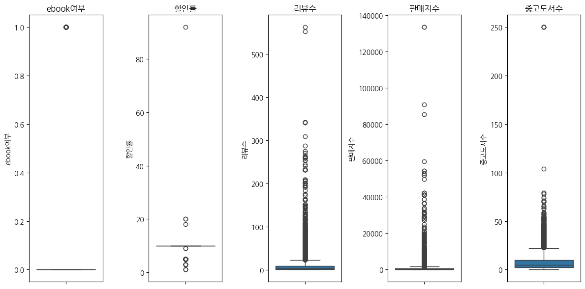
이상치가 있는 row 확인
tidy.loc[tidy['할인률'] > 10, ['분류', '책ID', '제목', '저자전체', '출판년월', '출판사', '정가', '할인가', '할인률', '판매지수', '리뷰수', '별점', '판매상태']]\
.sort_values(by='할인률', ascending=False)| 분류 | 책ID | 제목 | 저자전체 | 출판년월 | 출판사 | 정가 | 할인가 | 할인률 | 판매지수 | 리뷰수 | 별점 | 판매상태 | |
|---|---|---|---|---|---|---|---|---|---|---|---|---|---|
| 38418 | 컴퓨터 수험서 | 4938801 | Mos 2010 Study Guide for Microsoft Word Expert... | Pierce, John / Evelyn, Geoff | 2011-08 | Microsoft Press | 88730.0 | 7090.0 | 92.0 | NaN | NaN | NaN | 품절 |
| 23355 | 게임 | 19020246 | 게이머즈 GAMER'Z (월간) : 7월 [2015] | 게임문화 편집부 | 2015-07 | 게임문화 | 13800.0 | 11040.0 | 20.0 | NaN | 2.0 | 9.0 | 품절 |
| 44236 | 컴퓨터 공학 | 17832715 | 마이크로 소프트웨어 (월간) : 5월 [2015] | 마소인터렉티브 편집부 | 2015-05 | 마소인터렉티브 | 12900.0 | 10320.0 | 20.0 | NaN | NaN | NaN | 품절 |
| 30071 | 그래픽/디자인/멀티미디어 | 242170 | CATIA V5 Workbook (Paperback) | by Richard Cozzens | 2001-01 | Schroff Development Corporation | 106410.0 | 87250.0 | 18.0 | NaN | NaN | NaN | 품절 |
tidy.loc[tidy['리뷰수'] > 300, ['분류', '책ID', '제목', '저자전체', '출판년월', '출판사', '정가', '할인가', '할인률', '판매지수', '리뷰수', '별점', '판매상태']]\
.sort_values(by='리뷰수', ascending=False)| 분류 | 책ID | 제목 | 저자전체 | 출판년월 | 출판사 | 정가 | 할인가 | 할인률 | 판매지수 | 리뷰수 | 별점 | 판매상태 | |
|---|---|---|---|---|---|---|---|---|---|---|---|---|---|
| 21963 | 인터넷 비즈니스 | 109023736 | 네이버쇼핑 스마트스토어로 상위노출 하라+쿠팡 마켓플레이스로 상위노출 하라 | 김도균 저 | 2022-04 | 휴먼하우스 | 51000.0 | 45900.0 | 10.0 | NaN | 563.0 | 9.9 | 절판 |
| 21928 | 인터넷 비즈니스 | 82957982 | 네이버쇼핑 스마트스토어로 상위노출 하라 | 김도균 저 | 2023-01 | 휴먼하우스 | 22000.0 | 19800.0 | 10.0 | NaN | 553.0 | 9.9 | 절판 |
| 31474 | 오피스 활용 | 106711883 | 진짜 쓰는 실무 엑셀 | 전진권 저 | 2022-02 | 제이펍 | 21000.0 | 18900.0 | 10.0 | 133395.0 | 342.0 | 9.8 | NaN |
| 623 | 컴퓨터 입문/활용 | 106711883 | 진짜 쓰는 실무 엑셀 | 전진권 저 | 2022-02 | 제이펍 | 21000.0 | 18900.0 | 10.0 | 133395.0 | 342.0 | 9.8 | NaN |
| 10399 | 프로그래밍 언어 | 24259565 | Java의 정석 | 남궁성 저 | 2016-02 | 도우출판 | 30000.0 | 27000.0 | 10.0 | NaN | 341.0 | 9.7 | 절판 |
| 35351 | 컴퓨터 수험서 | 114910352 | 2023 에듀윌 EXIT 컴퓨터활용능력 1급 필기 (초단기끝장) | 이상미, 문혜영 편저 | 2022-10 | 에듀윌 | 22000.0 | 19800.0 | 10.0 | NaN | 309.0 | 10.0 | 절판 |
tidy.loc[
tidy['판매지수'].isin(tidy['판매지수'].nlargest(10))
].sort_values(by='판매지수', ascending=False)[
['분류', '책ID', '제목', '저자전체', '출판년월', '출판사', '정가', '할인가', '할인률', '판매지수', '리뷰수', '별점', '판매상태']
]| 분류 | 책ID | 제목 | 저자전체 | 출판년월 | 출판사 | 정가 | 할인가 | 할인률 | 판매지수 | 리뷰수 | 별점 | 판매상태 | |
|---|---|---|---|---|---|---|---|---|---|---|---|---|---|
| 623 | 컴퓨터 입문/활용 | 106711883 | 진짜 쓰는 실무 엑셀 | 전진권 저 | 2022-02 | 제이펍 | 21000.0 | 18900.0 | 10.0 | 133395.0 | 342.0 | 9.8 | NaN |
| 31474 | 오피스 활용 | 106711883 | 진짜 쓰는 실무 엑셀 | 전진권 저 | 2022-02 | 제이펍 | 21000.0 | 18900.0 | 10.0 | 133395.0 | 342.0 | 9.8 | NaN |
| 35033 | 컴퓨터 수험서 | 124645703 | SQL 자격검정 실전문제 | 한국데이터진흥원 저 | 2023-12 | 한국데이터산업진흥원 | 18000.0 | 17460.0 | 3.0 | 90864.0 | 97.0 | 9.2 | NaN |
| 34703 | 컴퓨터 수험서 | 140836732 | 2025 이지패스 ADsP 데이터분석 준전문가 | 전용문, 박현민 저 | 2025-01 | 위키북스 | 30000.0 | 27000.0 | 10.0 | 85488.0 | 104.0 | 9.9 | NaN |
| 7842 | 프로그래밍 언어 | 119293186 | Do it! 점프 투 파이썬 | 박응용 저 | 2023-06 | 이지스퍼블리싱 | 22000.0 | 19800.0 | 10.0 | 59391.0 | 116.0 | 9.8 | NaN |
| 48961 | 인공지능 | 122881163 | 챗GPT 교사 마스터 플랜 | 한민철 저 | 2023-10 | 책바세 | 24000.0 | 21600.0 | 10.0 | 54390.0 | 29.0 | 9.7 | NaN |
| 41168 | 컴퓨터 공학 | 122881163 | 챗GPT 교사 마스터 플랜 | 한민철 저 | 2023-10 | 책바세 | 24000.0 | 21600.0 | 10.0 | 54390.0 | 29.0 | 9.7 | NaN |
| 34786 | 컴퓨터 수험서 | 134642419 | 2025 이기적 컴퓨터활용능력 2급 필기+실기 올인원 | 홍태성, 박윤정 저 | 2024-10 | 영진닷컴 | 29000.0 | 26100.0 | 10.0 | 53112.0 | 34.0 | 9.8 | NaN |
| 183 | 컴퓨터 입문/활용 | 129394634 | 된다! 하루 만에 끝내는 챗GPT 활용법 | 프롬프트 크리에이터 저 | 2024-07 | 이지스퍼블리싱 | 17200.0 | 15480.0 | 10.0 | 52011.0 | 76.0 | 9.4 | NaN |
| 31261 | 오피스 활용 | 129394634 | 된다! 하루 만에 끝내는 챗GPT 활용법 | 프롬프트 크리에이터 저 | 2024-07 | 이지스퍼블리싱 | 17200.0 | 15480.0 | 10.0 | 52011.0 | 76.0 | 9.4 | NaN |
| 48682 | 인공지능 | 129394634 | 된다! 하루 만에 끝내는 챗GPT 활용법 | 프롬프트 크리에이터 저 | 2024-07 | 이지스퍼블리싱 | 17200.0 | 15480.0 | 10.0 | 52011.0 | 76.0 | 9.4 | NaN |
tidy.columnsIndex(['분류', '책ID', '제목', '소제목', '저자전체', '출판사', '출판년월', '정가', '할인가', '할인률',
'별점', '리뷰수', '판매지수', '대분류', '중분류', '소분류', '출판사링크', '발행일', '시리즈',
'시리즈링크', '관련분류', '책소개', '목차', '저자1', '저자1소개', '저자2', '저자2소개', '저자3',
'저자3소개', '만든이코멘트', '출판사리뷰', '책속으로', '추천평', '미리보기여부', '판매상태', '중고도서수',
'ebook여부', 'ebook가격', '책이미지주소', '책페이지주소'],
dtype='object')# tidy_sorted = tidy.sort_values(by='중고도서수', ascending=False)
# tidy_sorted.loc[tidy_sorted['중고도서수'] > 100,
# ['분류', '책ID', '제목', '저자전체', '출판년월', '출판사', '정가', '할인가', '중고도서수',
# '판매지수', '리뷰수', '별점', '판매상태']]# tidy.loc[tidy['중고도서수'] > 100, ['분류', '책ID', '제목', '저자전체', '출판년월', '출판사', '정가', '할인가', '할인률', '판매지수', '리뷰수', '별점', '판매상태']]\
# .sort_values(by='중고도서수', ascending=False)3. (unique) 각 column의 unique값과 unique값별 빈도
# 범주형 변수만 대상
cat_cols = tidy.select_dtypes(include=['object']).columns
for col in cat_cols:
print(f"=== {col} ===")
print("Unique count:", tidy[col].nunique())
value_counts = tidy[col].value_counts(dropna=False, sort=False)
value_ratio = tidy[col].value_counts(normalize=True, dropna=False, sort=False) * 100
summary_df = pd.DataFrame({
'Count': value_counts,
'Ratio (%)': value_ratio.round(2)
})
print(summary_df)
print("\n")=== 분류 ===
Unique count: 14
Count Ratio (%)
분류
컴퓨터 입문/활용 4075 8.16
웹사이트 2331 4.67
모바일/태블릿/SNS 848 1.70
프로그래밍 언어 7635 15.29
모바일 프로그래밍 954 1.91
네트워크/해킹/보안 2513 5.03
OS/데이터베이스 3331 6.67
인터넷 비즈니스 1152 2.31
게임 1618 3.24
그래픽/디자인/멀티미디어 6713 13.44
오피스 활용 3420 6.85
컴퓨터 수험서 5772 11.56
컴퓨터 공학 7413 14.84
인공지능 2175 4.35
=== 제목 ===
Unique count: 36559
Count Ratio (%)
제목
엄마 아빠에게 선물하는 스마트폰 활용 + 챗GPT 무한 꿀팁 36 5 0.01
캔바로 쉽고 빠르게 콘텐츠 디자인하기 3 0.01
선생님을 위한 캔바 수업 활용 4 0.01
레베기의 유튜브 콘텐츠 POWER 법칙 3 0.01
인공지능과 함께하는 똑똑한 컴퓨터 놀이 1 0.00
... ... ...
의료분야의 기계학습과 딥러닝의 활용 1 0.00
스마트 헬스케어 시스템을 위한 IOT 기반 응용 1 0.00
경영 및 경제학을 위한 기계학습의 이해 1 0.00
공연기획자의 ChatGPT 활용법 1 0.00
AI x 창의성: 미술·혁신·교육 1 0.00
[36559 rows x 2 columns]
=== 소제목 ===
Unique count: 13179
Count Ratio (%)
소제목
갤럭시, AI, 챗GPT, 등본 발급, 카카오톡, 송금, 선물하기, 쿠팡, 배달 주문... 5 0.01
NaN 29578 59.22
캔바 A to Z, 수업 자료 만들기, 협업 수업과 평가, 에듀테크 활용 수업, 캔바... 4 0.01
기술이 콘텐츠가 되고, 콘텐츠가 비즈니스가 되는 유튜브 신분 상승의 모든 것 3 0.01
한 권으로 해결하는 스마트폰 AI 활용 교재 3 0.01
... ... ...
데이터 분석, 이미지 생성, 번역 그리고 정보의 효율적 활용을 위한 AI 완벽 활용서 1 0.00
위험은 어디에서 오는가 1 0.00
초등편 / 중등편 1 0.00
쳇GPT를 활용한 예술기획과 지원신청서 작성법 1 0.00
생성형 AI와 창의성의 융합, 미술교육의 새로운 장 1 0.00
[13180 rows x 2 columns]
=== 저자전체 ===
Unique count: 24787
Count Ratio (%)
저자전체
온선(김은정) 저 5 0.01
권유진, 백은영, 서미경, 송민경, 안은진 저 외 3명 3 0.01
김민주 저 10 0.02
레베기 저 3 0.01
김도화 저/렉스기획팀 감수 1 0.00
... ... ...
김용덕 저 2 0.00
한기석 저 2 0.00
이용호 저 1 0.00
조영환, 조재훈 저 1 0.00
박지숙 저 1 0.00
[24787 rows x 2 columns]
=== 출판사 ===
Unique count: 1921
Count Ratio (%)
출판사
골든래빗 179 0.36
아티오 138 0.28
앤써북 295 0.59
리코멘드 22 0.04
REXmedia(렉스미디어) 513 1.03
... ... ...
스토리피아 1 0.00
학지사비즈 1 0.00
NAVER 1 0.00
날 1 0.00
아트브릿지 1 0.00
[1922 rows x 2 columns]
=== 출판년월 ===
Unique count: 447
Count Ratio (%)
출판년월
2025-06 7 0.01
2025-05 137 0.27
2025-04 315 0.63
2025-03 336 0.67
2025-02 276 0.55
... ... ...
1980-02 1 0.00
1991-06 1 0.00
1989-06 1 0.00
1988-11 1 0.00
1986-09 2 0.00
[448 rows x 2 columns]
=== 대분류 ===
Unique count: 21
Count Ratio (%)
대분류
IT 모바일 47694 95.48
사회 정치 107 0.21
경제 경영 461 0.92
자기계발 50 0.10
가정 살림 9 0.02
대학교재 541 1.08
어린이 159 0.32
청소년 25 0.05
인문 36 0.07
국어 외국어 사... 8 0.02
예술 196 0.39
건강 취미 10 0.02
자연과학 97 0.19
수험서 자격증 507 1.02
소설/시/희곡 11 0.02
만화/라이트노벨 29 0.06
에세이 2 0.00
잡지 2 0.00
컴퓨터 2 0.00
초등참고서 1 0.00
역사 3 0.01
=== 중분류 ===
Unique count: 116
Count Ratio (%)
중분류
컴퓨터 입문/활... 4665 9.34
인터넷 비즈니스 1068 2.14
컴퓨터 공학 4355 8.72
웹사이트 2485 4.97
교육 56 0.11
... ... ...
일본어 1 0.00
나노과학 2 0.00
동양사/동양문화 2 0.00
독서/비평 1 0.00
한국사/한국문화 1 0.00
[117 rows x 2 columns]
=== 소분류 ===
Unique count: 274
Count Ratio (%)
소분류
어른을 위한 컴... 2046 4.10
인터넷 마케팅 366 0.73
어린이 컴퓨터 1008 2.02
윈도우 입문서/... 810 1.62
컴퓨터 교육 988 1.98
... ... ...
일본역사/문화 2 0.00
물리학 2 0.00
고전 읽기 1 0.00
관광/호텔경영 1 0.00
한국문화 1 0.00
[275 rows x 2 columns]
=== 출판사링크 ===
Unique count: 1900
Count Ratio (%)
출판사링크
https://www.yes24.com/product/search?domain=ALL... 179 0.36
https://www.yes24.com/product/search?domain=ALL... 138 0.28
https://www.yes24.com/product/search?domain=ALL... 295 0.59
https://www.yes24.com/product/search?domain=ALL... 22 0.04
https://www.yes24.com/product/search?domain=ALL... 513 1.03
... ... ...
https://www.yes24.com/product/search?domain=ALL... 1 0.00
https://www.yes24.com/product/search?domain=ALL... 1 0.00
https://www.yes24.com/product/search?domain=ALL... 1 0.00
https://www.yes24.com/product/search?domain=ALL... 1 0.00
https://www.yes24.com/product/search?domain=ALL... 1 0.00
[1901 rows x 2 columns]
=== 발행일 ===
Unique count: 6245
Count Ratio (%)
발행일
2025년 06월 02일 5 0.01
2025년 05월 30일 9 0.02
2025년 05월 20일 15 0.03
2025년 05월 16일 6 0.01
2025년 05월 15일 15 0.03
... ... ...
2024년 11월 21일 1 0.00
2024년 10월 03일 1 0.00
2024년 09월 16일 1 0.00
2024년 08월 25일 1 0.00
2024년 07월 19일 2 0.00
[6246 rows x 2 columns]
=== 시리즈 ===
Unique count: 3779
Count Ratio (%)
시리즈
NaN 39489 79.06
Start up 스타트업 시리즈 17 0.03
OA마스터 10 0.02
지적생활자를 위한 교과서 시리즈 8 0.02
된다! 시리즈 116 0.23
... ... ...
아트코리아랩총서-06 2 0.00
아트코리아랩총서-05 2 0.00
아트코리아랩총서 3 0.01
위키북스 생성형 AI 프로그래밍-008 1 0.00
위키북스 with AI 시리즈-012 1 0.00
[3780 rows x 2 columns]
=== 시리즈링크 ===
Unique count: 3694
Count Ratio (%)
시리즈링크
NaN 39517 79.11
https://www.yes24.com/product/category/series/0... 8 0.02
https://www.yes24.com/product/category/series/0... 4 0.01
https://www.yes24.com/product/category/series/0... 3 0.01
https://www.yes24.com/product/category/series/0... 41 0.08
... ... ...
https://www.yes24.com/product/category/series/0... 2 0.00
https://www.yes24.com/product/category/series/0... 1 0.00
https://www.yes24.com/product/category/series/0... 1 0.00
https://www.yes24.com/product/category/series/0... 5 0.01
https://www.yes24.com/product/category/series/0... 3 0.01
[3695 rows x 2 columns]
=== 관련분류 ===
Unique count: 4534
Count Ratio (%)
관련분류
국내도서\n>\nIT 모바일\n>\n컴퓨터 입문/활용\n>\n어른을 위한 컴퓨터\n\... 5 0.01
국내도서\n>\nIT 모바일\n>\n인터넷 비즈니스\n>\n인터넷 마케팅\n\n ... 3 0.01
국내도서\n>\nIT 모바일\n>\n인터넷 비즈니스\n>\n인터넷 마케팅\n\n ... 4 0.01
국내도서\n>\nIT 모바일\n>\n컴퓨터 입문/활용\n>\n어른을 위한 컴퓨터\n\... 3 0.01
국내도서\n>\nIT 모바일\n>\n컴퓨터 입문/활용\n>\n어린이 컴퓨터 314 0.63
... ... ...
국내도서\n>\nIT 모바일\n>\n인공지능\n>\n인공지능 일반\n\n ... 1 0.00
국내도서\n>\n경제 경영\n>\n마케팅/세일즈\n>\n마케팅/브랜드\n\n ... 1 0.00
국내도서\n>\n인문\n>\n인문/교양\n>\n교양으로 읽는 인문\n\n ... 1 0.00
국내도서\n>\nIT 모바일\n>\n인공지능\n>\n인공지능 일반\n\n ... 1 0.00
국내도서\n>\n예술\n>\n미술\n>\n미술일반/교양\n\n ... 1 0.00
[4534 rows x 2 columns]
=== 책소개 ===
Unique count: 33507
Count Ratio (%)
책소개
<B> 스마트폰은 24시간 엄마 아빠랑 있지만, 우리는 그러지 못한다!<br/> 그래... 5 0.01
<b>누구나 디자이너가 되는 시대, 이젠 캔바 하나로 무엇이든 만든다!<br/>AI와... 3 0.01
<b>초ㆍ중ㆍ고등학교 모든 선생님을 위한 캔바 활용 비법서<br/>캔바 A to Z까... 4 0.01
<b>기술자의 콘텐츠 혁명, 레베기가 알려주는 유튜브 비즈니스 전략서<br/>“기술만... 3 0.01
인공지능의 개념을 쉽게 이해하고 활용, 다양한 인공지능 프로그램의 체험 활동, 인공지... 1 0.00
... ... ...
" 의료 정보학은 데이터에서 패턴을 발견하고 이를 학습하여 의료 현장에서 활용하는 학... 1 0.00
" 이 책은 사물인터넷(IoT) 기술이 현대 의료 시스템에 미치는 혁신적인 영향을 탐... 1 0.00
머신러닝이 다양한 금융 서비스와 응용 분야에서 필수적인 역할을 한다는 사실은 이미 널... 1 0.00
이 책은 AI기술인 챗GPT와 예술기획의 혁신적 만남에 대해 깊이 있게 탐구한다. 기... 1 0.00
본 도서는 한국창의력교육학회에서 주관한<br/>‘제1회 전경원 HMC 연구자상’공모에... 1 0.00
[33508 rows x 2 columns]
=== 목차 ===
Unique count: 37118
Count Ratio (%)
목차
<b>[PART 01] 갤럭시 숨어 있는 꿀팁 기능(1)</b><br/><br/>_0... 5 0.01
<b>1장 캔바 첫걸음, 계정 생성과 화면 이해하기</b><br/><br/>1. 캔바... 3 0.01
<b>CHAPTER 00 2022 교육과정과 만나는 디지털 도구</B><br/><br... 4 0.01
PROLOGUE<br/>HOW TO<br/><br/><b>PART 01 유튜브, 기술... 3 0.01
Chapter 01 인공지능이란 무엇일까요?<br/>Chapter 02 행복한 우... 1 0.00
... ... ...
개요 5<br/> <br/>제1장 소개 8<br/> <br/>제2장 심전도 ... 1 0.00
1장 \t소개 8<br/> <br/>2장 \tHigh-Tech Medical Care... 1 0.00
들어가며 5<br/> <br/>제1장 머신러닝 소개 7<br/> <br/>제2장... 1 0.00
프롤로그 나는 어떻게 공연 기획자가 되었나<br/><br/>- 교통사고와 외모 콤플렉... 1 0.00
* 책을 시작하며<br/><br/><b>PART １ : 생성형 AI와 창의성 교육의 ... 1 0.00
[37119 rows x 2 columns]
=== 저자1 ===
Unique count: 11938
Count Ratio (%)
저자1
온선(김은정) 5 0.01
권유진 3 0.01
김민주 10 0.02
레베기 3 0.01
김도화 1 0.00
... ... ...
윤명섭 2 0.00
김용덕 2 0.00
한기석 2 0.00
이용호 1 0.00
조영환 1 0.00
[11939 rows x 2 columns]
=== 저자1소개 ===
Unique count: 14468
Count Ratio (%)
저자1소개
10년 넘게 교육 현장에서 사람들과 호흡해온 강사이자, ‘복잡한 걸 쉽게, 모르는 걸... 5 0.01
어린이집 운영 및 보육 경력20년 이상, 재미드니연구소 강사, 서울시 늘봄강사, 서대... 3 0.01
세종대학교 교육대학원 인공지능융합교육학과에 재학 중인 현직 교사이다. 구글 공인 교육... 4 0.01
가죽 제품뿐만 아니라 패션, F&B 등 다양한 분야의 브랜드를 15년 이상 기획하고 ... 3 0.01
『인공지능과 함께하는 똑똑한 컴퓨터 놀이』의 저자이다. 1 0.00
... ... ...
아이피렉스 특허법률사무소의 대표다. 숭실대학교에서 정보통신전자공학 학사 학위를 받았다... 2 0.00
서울시50플러스재단에서 강사로 활동하고 있다. 광운대학교에서 음성신호처리를 전공했고,... 2 0.00
AI 머신비전 전문회사 “호연지재” 대표, 한국강사신문 AI 칼럼니스트, 한국강사에이... 1 0.00
“문화체육관광부 국립국어원이 주최하고 한국정보과학회 언어공학연구회가 주관한 ‘국어정보... 1 0.00
예술가이자, 교육자로 순수 조형 작업과 교육현장에 매진하고 있다. 홍익대학교 미술대... 1 0.00
[14469 rows x 2 columns]
=== 저자2 ===
Unique count: 6410
Count Ratio (%)
저자2
NaN 33492 67.05
백은영 3 0.01
렉스기획팀 4 0.01
금미정 14 0.03
장소영 6 0.01
... ... ...
배찬 2 0.00
에듀테크교사연구회 1 0.00
신승아 2 0.00
문병량 2 0.00
조재훈 1 0.00
[6411 rows x 2 columns]
=== 저자2소개 ===
Unique count: 7094
Count Ratio (%)
저자2소개
NaN 37229 74.53
할 수 있다는 자신감을 디자인하는 크리에이터 풀마인드이다. 국제디지털콘텐츠협회 지국장... 3 0.01
코딩 교육 관련 학습서 『영재스쿨 스크래치 3.0 Lesson 3』 를 펴냈다. 2 0.00
씨티폰, 셀룰러폰을 거쳐 지금의 스마트폰까지 급변하는 기술시대에 궁금한게 많아서 강남... 14 0.03
▣ 경력사항현) 가온피앤디 대표현) 가온스마트 대표현) 소상공인소셜홍보연구소 대표강사... 5 0.01
... ... ...
한국AI작가협회. 1 0.00
디지털 대전환 시대, 교육부에서 강조하는 '교실 혁명'을 이끄는 주체는 바로 선생님들... 1 0.00
국민대학교 강사이며, 한양대학교를 졸업하고 국민대학교에서 체육학(스포츠경영학) 박사학... 2 0.00
예원예술대학교 스포츠과학과 교수다. 건국대학교 대학원에서 체육학 박사학위를 받았다. ... 2 0.00
『기억하고 생각하는 인공지능』의 저자이다. 1 0.00
[7095 rows x 2 columns]
=== 저자3 ===
Unique count: 3535
Count Ratio (%)
저자3
NaN 42444 84.97
서미경 3 0.01
유병선 4 0.01
조래정 3 0.01
안상준 11 0.02
.. ... ...
박승순 1 0.00
김홍민 1 0.00
최성호 1 0.00
박수용 1 0.00
서유미 1 0.00
[3536 rows x 2 columns]
=== 저자3소개 ===
Unique count: 3024
Count Ratio (%)
저자3소개
NaN 44650 89.39
16년간 복지관과 센터에서 IT 강사로 활동하며, AI와 캔바를 활용한 콘텐츠 제작,... 3 0.01
전주대학교사범대학부설고등학교 영어 교사. Google for Education 공인 ... 4 0.01
경기도 포천 이동중학교 영어과 교사경기에듀테크미래교육연구회 운영진, 포천에듀테크미래교... 3 0.01
제조, 금융, 유통, 식품, 마케팅 등 다양한 도메인에서 많은 인공지능 프로젝트를 수... 8 0.02
... ... ...
『AI·디지털 문화유산과 떠나는 역사 여행』의 저자이다. 1 0.00
전자음악 작곡가(a.k.a. Radiophonics), 뉴미디어 아티스트 그리고 융합... 1 0.00
사단법인 한국통신판매사업자협회 회장, 서울벤처대학원대학교 교수, (주)저스트아이디어 ... 1 0.00
국립한밭대학교 공동훈련센터 부센터장.국립한밭대학교 융합기술학과 교수. 1 0.00
한국AI작가협회. 1 0.00
[3025 rows x 2 columns]
=== 만든이코멘트 ===
Unique count: 454
Count Ratio (%)
만든이코멘트
접수된 글은 확인을 거쳐 이 곳에 게재됩니다.독자 분들의 리뷰는 리뷰 쓰기를, 책에 ... 49189 98.48
안녕하세요. 이 책의 저자 입니다.\n \n ... 2 0.00
안녕하세요. 이 책의 편집자 입니다.\n \n ... 13 0.03
안녕하세요. 이 책의 편집자 입니다.\n \n ... 9 0.02
안녕하세요. 이 책의 저자 입니다.\n \n ... 3 0.01
... ... ...
안녕하세요. 이 책의 편집자 입니다.\n \n ... 1 0.00
안녕하세요. 이 책의 역자 입니다.\n \n ... 1 0.00
안녕하세요. 이 책의 저자 입니다.\n \n ... 1 0.00
안녕하세요. 이 책의 저자 입니다.\n \n ... 1 0.00
안녕하세요. 이 책의 저자 입니다.\n \n ... 1 0.00
[455 rows x 2 columns]
=== 출판사리뷰 ===
Unique count: 16816
Count Ratio (%)
출판사리뷰
<b>★ “은정아, 카톡으로 용돈 보내고 싶은데... 이거 어떻게 하는 거였지?”<b... 5 0.01
콘텐츠가 경쟁력인 시대입니다. 이 책은 가장 빠르고 쉽게 ‘결과’를 만들어낼 수 있도... 3 0.01
<b>이 책은 교육 현장에 바로 활용할 수 있는 캔바 활용 비법서이다!</b><br/... 4 0.01
<b>기술자에서 콘텐츠 크리에이터로, 그리고 비즈니스 성공까지</b><br/><br/... 3 0.01
[자료 다운로드 안내]<br/>[인공지능과 함께하는 똑똑한 컴퓨터 놀이 자료 홈페이지... 1 0.00
... ... ...
<B>미래 일자리의 재탄생</b><br/><br/>AI 기술의 발전은 우리의 일상과 ... 2 0.00
몇 년 전 알파고가 대단한 실력을 발휘하였지만, 오히려 사람들은 뭔지 모를 두려움을 ... 1 0.00
인간과 인공지능이 만드는 협업의 미래<br/><br/>인간의 직관적 사고와 인공지능의... 1 0.00
<b>인간과 인공지능이 만드는 협업의 미래</b><br/><br/>인간의 직관적 사고... 1 0.00
『AI와 함께하는 창의적 미술교육의 미래』는 생성형 AI와 예술의 융합을 통해 미래 ... 1 0.00
[16817 rows x 2 columns]
=== 책속으로 ===
Unique count: 4591
Count Ratio (%)
책속으로
NaN 43823 87.73
여러분이 가진 기술은 세상과 소통하고 연결될 수 있는 매우 강력한 무기입니다. 기술 ... 3 0.01
별일 아닌 것 같지만 프로그램 개발의 모든 일에는 담당자가 있다. 데이터베이스 설계는... 1 0.00
챗지피티가 흥행한 이후 많은 IT 기업이 생성형 AI 개발에 뛰어듭니다. 빅테크 기업... 4 0.01
스마트폰을 쓰다가 간혹 여러 가지 어려움에 봉착할 때가 있어요. 화면의 글씨가 보이지... 2 0.00
... ... ...
AI는 인간의 능력을 뛰어넘는 지능을 가진 기계를 만드는 기술이다. AI는 이미 우리... 2 0.00
그런데 여기서 놓쳐서는 안 될 중요 포인트가 있다. 챗GPT의 성능을 높인 핵심 요인... 1 0.00
그런데 여기서 놓쳐서는 안 될 중요 포인트가 있다. 챗GPT의 성능을 높인 핵심 요인... 1 0.00
2023년 2월 12일, 그 날까지 저는 그저 평범한 기획자였어요. 2023년을 기준... 1 0.00
우리 사회 빠른 변화를 주도하는 두 가지 요인을 생각해 보자면, 첫째는 디지털 전환 ... 1 0.00
[4592 rows x 2 columns]
=== 추천평 ===
Unique count: 2462
Count Ratio (%)
추천평
NaN 45914 91.92
비트코인 시장은 변동성이 크고 예측이 어려운 영역이지만 AI와 알고리즘을 활용하면 감... 3 0.01
AI가 교과 세특 작성 도우미 역할을 넘어서 수업과 평가, 학급 운영, 업무까지도 바... 3 0.01
디지털 혁명이 교실에서도 구현되고 있습니다. 이 책은 단순한 교수법을 넘어, 우리의 ... 4 0.01
현대 사회의 원유와도 같은 데이터 채굴권은 원래 개발자에게만 허락됐었다. 하지만 이 ... 5 0.01
... ... ...
생성형 AI는 굉장한 약속과 엄청난 과장 속에 무대에 등장했다. 그리고 상당한 걱정도... 1 0.00
윤권수 프로듀서가 전하는 AI 시대의 콘텐츠 제작 패러다임은 놀랍습니다. 그의 경험과... 1 0.00
22대 국회가 개원하자마자 인사청문회, 필리버스터로 정신없이 돌아가는 상황에서 ‘추천... 1 0.00
예술의 미래는 분명 AI에게 있다고 믿습니다. 인승현 작가는 그 가능성을 현실로 구현... 1 0.00
이 책은 빠르게 변화하는 교육 환경 속에서 AI와 예술이 어떻게 융합되어 창의성을 확... 1 0.00
[2463 rows x 2 columns]
=== 판매상태 ===
Unique count: 3
Count Ratio (%)
판매상태
NaN 18032 36.10
품절 6371 12.75
절판 25306 50.66
일시품절 241 0.48
=== 책이미지주소 ===
Unique count: 41487
Count Ratio (%)
책이미지주소
https://image.yes24.com/goods/145993511/L 5 0.01
https://image.yes24.com/goods/146262491/L 3 0.01
https://image.yes24.com/goods/146043037/L 4 0.01
https://image.yes24.com/goods/146285291/L 3 0.01
https://image.yes24.com/goods/146281744/L 1 0.00
... ... ...
https://image.yes24.com/goods/129106129/L 1 0.00
https://image.yes24.com/goods/129106120/L 1 0.00
https://image.yes24.com/goods/129106070/L 1 0.00
https://image.yes24.com/goods/123664142/L 1 0.00
https://image.yes24.com/goods/145967474/L 1 0.00
[41487 rows x 2 columns]
=== 책페이지주소 ===
Unique count: 41487
Count Ratio (%)
책페이지주소
https://www.yes24.com/product/goods/145993511 5 0.01
https://www.yes24.com/product/goods/146262491 3 0.01
https://www.yes24.com/product/goods/146043037 4 0.01
https://www.yes24.com/product/goods/146285291 3 0.01
https://www.yes24.com/product/goods/146281744 1 0.00
... ... ...
https://www.yes24.com/product/goods/129106129 1 0.00
https://www.yes24.com/product/goods/129106120 1 0.00
https://www.yes24.com/product/goods/129106070 1 0.00
https://www.yes24.com/product/goods/123664142 1 0.00
https://www.yes24.com/product/goods/145967474 1 0.00
[41487 rows x 2 columns]
column 별로 각 row 비율 확인
def summarize_category(df, column, top_n=None, exclude_na=True):
"""
범주형 변수 요약 (건수 + 비율)
Parameters:
- df: DataFrame
- column: 분석할 열 이름 (문자열)
- top_n: 상위 n개만 출력 (None이면 전체)
- exclude_na: NaN 제외 여부
Returns:
- summary DataFrame
"""
counts = df[column].value_counts(dropna=exclude_na)
ratios = df[column].value_counts(normalize=True, dropna=exclude_na).mul(100).round(2)
summary = pd.DataFrame({
'건수': counts,
'비율(%)': ratios
}).reset_index().rename(columns={'index': column})
if top_n is not None:
summary = summary.head(top_n)
return summarysummarize_category(tidy, '분류', top_n=14)| 분류 | 건수 | 비율(%) | |
|---|---|---|---|
| 0 | 프로그래밍 언어 | 7635 | 15.29 |
| 1 | 컴퓨터 공학 | 7413 | 14.84 |
| 2 | 그래픽/디자인/멀티미디어 | 6713 | 13.44 |
| 3 | 컴퓨터 수험서 | 5772 | 11.56 |
| 4 | 컴퓨터 입문/활용 | 4075 | 8.16 |
| 5 | 오피스 활용 | 3420 | 6.85 |
| 6 | OS/데이터베이스 | 3331 | 6.67 |
| 7 | 네트워크/해킹/보안 | 2513 | 5.03 |
| 8 | 웹사이트 | 2331 | 4.67 |
| 9 | 인공지능 | 2175 | 4.35 |
| 10 | 게임 | 1618 | 3.24 |
| 11 | 인터넷 비즈니스 | 1152 | 2.31 |
| 12 | 모바일 프로그래밍 | 954 | 1.91 |
| 13 | 모바일/태블릿/SNS | 848 | 1.70 |
summarize_category(tidy, '저자전체', top_n=10)| 저자전체 | 건수 | 비율(%) | |
|---|---|---|---|
| 0 | 편집부 | 355 | 0.71 |
| 1 | 영진정보연구소 저 | 282 | 0.56 |
| 2 | 길벗알앤디 저 | 266 | 0.53 |
| 3 | 편집부 저 | 206 | 0.41 |
| 4 | 해람북스 기획팀 저 | 134 | 0.27 |
| 5 | KIE 기획연구실 저 | 121 | 0.24 |
| 6 | 조현정 저 | 119 | 0.24 |
| 7 | 웰북수험서개발팀 저 | 118 | 0.24 |
| 8 | 렉스기획팀 저 | 107 | 0.21 |
| 9 | 이용태 저 | 96 | 0.19 |
summarize_category(tidy, '출판사', top_n=10)| 출판사 | 건수 | 비율(%) | |
|---|---|---|---|
| 0 | 영진닷컴 | 3359 | 6.73 |
| 1 | 한빛미디어 | 2741 | 5.49 |
| 2 | 에이콘출판사 | 2446 | 4.90 |
| 3 | 길벗 | 2084 | 4.17 |
| 4 | 성안당 | 1520 | 3.04 |
| 5 | 정보문화사 | 1069 | 2.14 |
| 6 | 제이펍 | 852 | 1.71 |
| 7 | 위키북스 | 794 | 1.59 |
| 8 | 커뮤니케이션북스 | 770 | 1.54 |
| 9 | 비제이퍼블릭(BJ퍼블릭) | 758 | 1.52 |
summarize_category(tidy, '대분류', top_n=10)| 대분류 | 건수 | 비율(%) | |
|---|---|---|---|
| 0 | IT 모바일 | 47694 | 95.48 |
| 1 | 대학교재 | 541 | 1.08 |
| 2 | 수험서 자격증 | 507 | 1.02 |
| 3 | 경제 경영 | 461 | 0.92 |
| 4 | 예술 | 196 | 0.39 |
| 5 | 어린이 | 159 | 0.32 |
| 6 | 사회 정치 | 107 | 0.21 |
| 7 | 자연과학 | 97 | 0.19 |
| 8 | 자기계발 | 50 | 0.10 |
| 9 | 인문 | 36 | 0.07 |
summarize_category(tidy, '시리즈', top_n=10, exclude_na=False)| 시리즈 | 건수 | 비율(%) | |
|---|---|---|---|
| 0 | NaN | 39489 | 79.06 |
| 1 | 인공지능 총서 | 624 | 1.25 |
| 2 | 에이콘 데이터 과학 시리즈 | 292 | 0.58 |
| 3 | 에이콘출판사- 해킹과 보안 시리즈 | 220 | 0.44 |
| 4 | 이지스퍼블리싱-Do it! 시리즈 | 213 | 0.43 |
| 5 | 한빛아카데미-IT COOKBOOK | 205 | 0.41 |
| 6 | 된다! 시리즈 | 116 | 0.23 |
| 7 | Programming Insight | 115 | 0.23 |
| 8 | 프로그래밍 언어 시리즈 | 91 | 0.18 |
| 9 | 에이콘 임베디드 시스템 프로그래밍 시리즈 | 83 | 0.17 |
summarize_category(tidy, '판매상태', top_n=10, exclude_na=False)| 판매상태 | 건수 | 비율(%) | |
|---|---|---|---|
| 0 | 절판 | 25306 | 50.66 |
| 1 | NaN | 18032 | 36.10 |
| 2 | 품절 | 6371 | 12.75 |
| 3 | 일시품절 | 241 | 0.48 |
4. (기술통계) 각 column의 기술통계 (평균값, 최대값, 최솟값, 최빈값, 분위수 등)
# 수치형 변수만 선택
numeric_cols = tidy.select_dtypes(include=['float64', 'int64']).columns
# 통계 요약 저장용 리스트
stat_list = []
for col in numeric_cols:
desc = tidy[col].describe()
mode = tidy[col].mode(dropna=False).values[0] # 최빈값 (여러 개 중 첫 번째 선택)
mode_all = tidy[col].mode(dropna=False).tolist() # 최빈값 리스트 형태로 저장
stat_list.append({
'Feature': col,
'Count': desc['count'],
'Mean': desc['mean'],
'Std': desc['std'],
'Min': desc['min'],
'25%': desc['25%'],
'Median (50%)': desc['50%'],
'75%': desc['75%'],
'Max': desc['max'],
'Mode': mode,
'Mode_all': mode_all
})
# DataFrame으로 정리
stats_df = pd.DataFrame(stat_list)
stats_df| Feature | Count | Mean | Std | Min | 25% | Median (50%) | 75% | Max | Mode | Mode_all | |
|---|---|---|---|---|---|---|---|---|---|---|---|
| 0 | 책ID | 49950.0 | 4.063684e+07 | 4.947424e+07 | 68.0 | 1379073.75 | 8224511.0 | 90232556.25 | 146361202.0 | 142994193.0 | [142994193, 142994701] |
| 1 | 정가 | 49947.0 | 2.278109e+04 | 1.883835e+04 | 0.0 | 15000.00 | 20000.0 | 28000.00 | 1500000.0 | 25000.0 | [25000.0] |
| 2 | 할인가 | 49948.0 | 2.100965e+04 | 1.766495e+04 | 0.0 | 13500.00 | 19000.0 | 25200.00 | 1500000.0 | 18000.0 | [18000.0] |
| 3 | 할인률 | 39745.0 | 9.712039e+00 | 1.245759e+00 | 1.0 | 10.00 | 10.0 | 10.00 | 92.0 | 10.0 | [10.0] |
| 4 | 별점 | 22246.0 | 8.507664e+00 | 1.814084e+00 | 2.0 | 8.00 | 9.2 | 10.00 | 10.0 | NaN | [nan] |
| 5 | 리뷰수 | 22244.0 | 9.257373e+00 | 1.826471e+01 | 1.0 | 1.00 | 4.0 | 10.00 | 563.0 | NaN | [nan] |
| 6 | 판매지수 | 14286.0 | 9.613578e+02 | 3.408773e+03 | 12.0 | 49.50 | 201.0 | 720.00 | 133395.0 | NaN | [nan] |
| 7 | 미리보기여부 | 49950.0 | 4.065465e-01 | 4.911937e-01 | 0.0 | 0.00 | 0.0 | 1.00 | 1.0 | 0.0 | [0] |
| 8 | 중고도서수 | 34716.0 | 7.267456e+00 | 7.581312e+00 | 0.0 | 2.00 | 5.0 | 10.00 | 250.0 | NaN | [nan] |
| 9 | ebook여부 | 49950.0 | 1.852252e-01 | 3.884841e-01 | 0.0 | 0.00 | 0.0 | 0.00 | 1.0 | 0.0 | [0] |
| 10 | ebook가격 | 7222.0 | 1.987410e+04 | 1.074246e+04 | 0.0 | 14000.00 | 18900.0 | 24000.00 | 243000.0 | NaN | [nan] |
5. (상관관계) 상관관계 매트릭스
# 수치형 변수 간 상관관계 매트릭스
import seaborn as sns
import matplotlib.pyplot as plt
# 수치형 변수만 선택
numeric_df = tidy.select_dtypes(include=['float64', 'int64'])
# 상관계수 계산
corr_matrix = numeric_df.corr()
# 시각화
plt.figure(figsize=(10, 8))
sns.heatmap(corr_matrix, annot=True, cmap='coolwarm', fmt=".2f", square=True)
plt.title("Numeric Feature Correlation Matrix")
plt.tight_layout()
plt.show()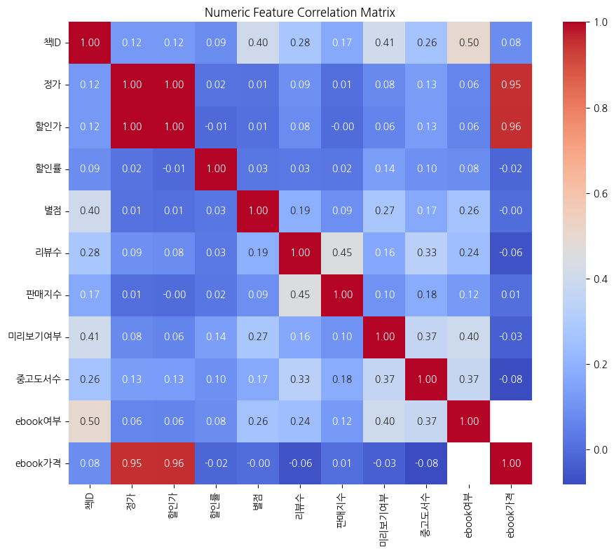
6. (시각화) histogram, bar graph, box plot 등
import matplotlib.pyplot as plt
numeric_cols = tidy.select_dtypes(include=['float64', 'int64']).columns
# 전체 수치형 변수에 대해 히스토그램 그리기
for col in numeric_cols:
plt.figure(figsize=(6, 4))
plt.hist(tidy[col].dropna(), bins=60, edgecolor='black')
plt.title(f'Histogram of {col}')
plt.xlabel(col)
plt.ylabel('Frequency')
plt.tight_layout()
plt.show()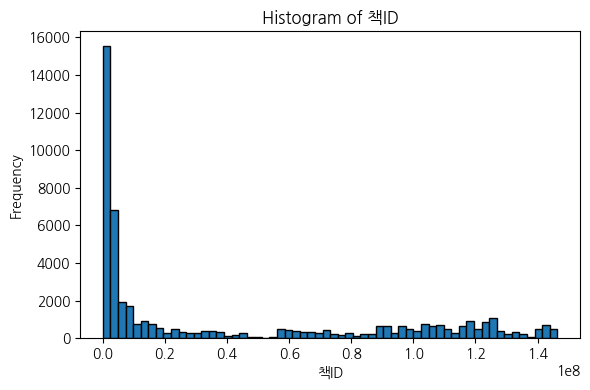
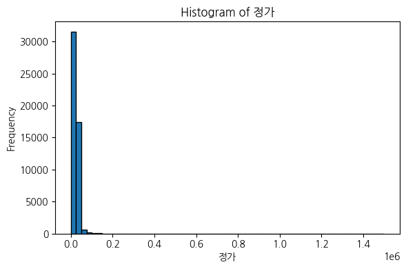
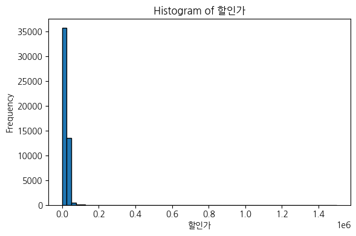
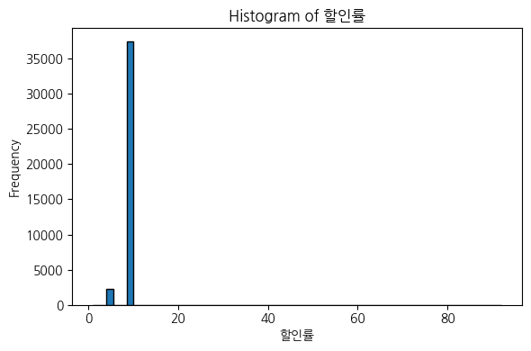
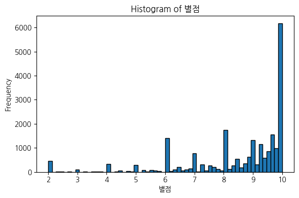
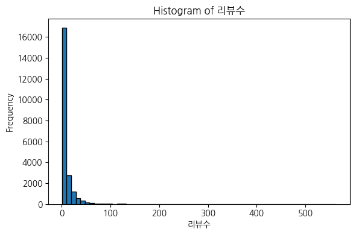
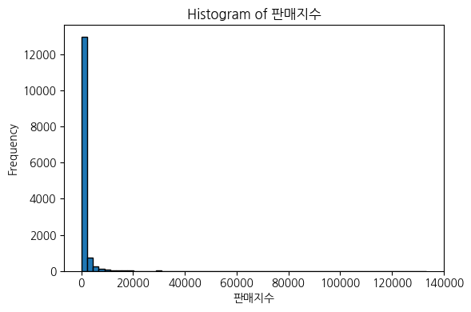
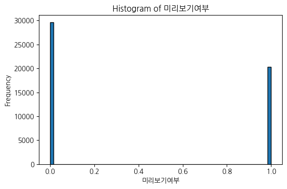
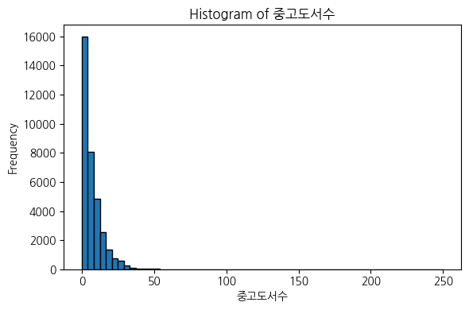
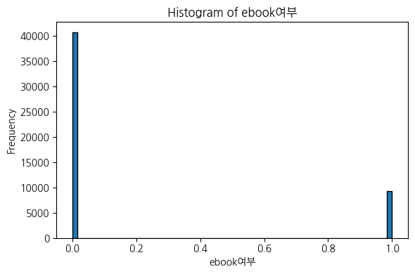
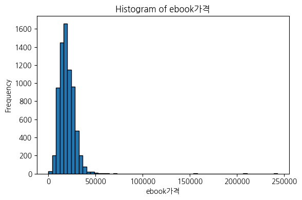
# 특정 변수 중 특정 값들에 따른 수치형 변수들 분포 비교
import seaborn as sns
import matplotlib.pyplot as plt
# 파라미터 설정
group_col = '분류' # 비교할 범주형 변수
target_values = ['컴퓨터 입문/활용', '인공지능', '프로그래밍 언어', 'OS/데이터베이스', '컴퓨터 공학'] # 특정 값들
numeric_cols = ['할인가', '별점', '판매지수'] # 수치형 변수 목록
# 필터링된 데이터프레임
filtered_df = tidy[tidy[group_col].isin(target_values)]
# 반복해서 boxplot 그리기
for col in numeric_cols:
plt.figure(figsize=(6, 4))
sns.boxplot(data=filtered_df, x=group_col, y=col)
plt.title(f'Boxplot of {col} by {group_col} ({", ".join(target_values)})')
plt.tight_layout()
plt.show()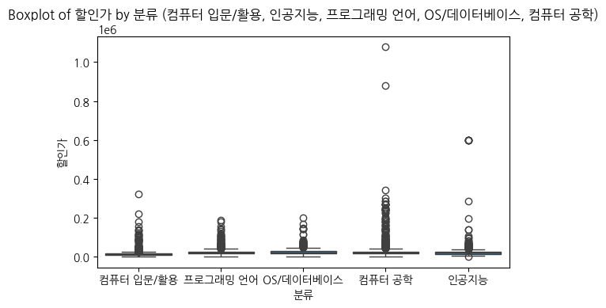
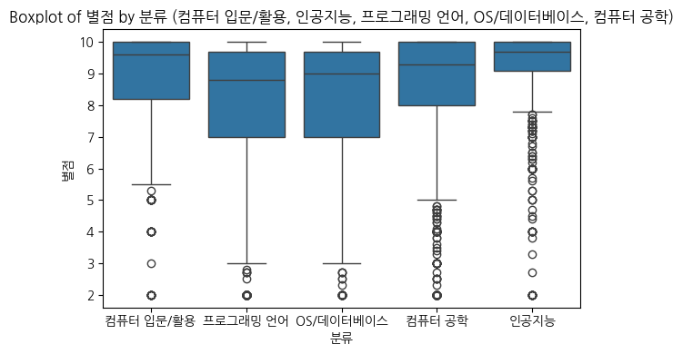
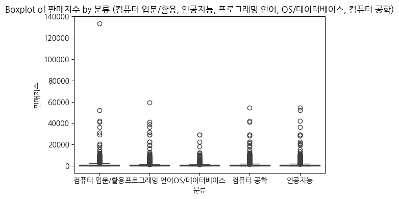
3. 분석
# 책ID가 2회 이상 등장하는 경우 찾기
book_counts = tidy['책ID'].value_counts()
duplicate_ids = book_counts[book_counts > 1].index
# 해당 책ID만 필터링 (copy로 명시적 복사)
df_duplicates = tidy[tidy['책ID'].isin(duplicate_ids)].copy()
# 책ID별 등장 횟수 열 추가 (.loc 사용하여 경고 회피)
df_duplicates.loc[:, 'count'] = df_duplicates['책ID'].map(book_counts)
# 책ID 기준으로 중복 제거 (대표값 1개만 추출)
df_result = df_duplicates.drop_duplicates(subset=['책ID'])[
['책ID', '제목', 'count', '저자전체', '출판사', '출판년월', '판매지수', '리뷰수', '별점']
]
df_result| 책ID | 제목 | count | 저자전체 | 출판사 | 출판년월 | 판매지수 | 리뷰수 | 별점 | |
|---|---|---|---|---|---|---|---|---|---|
| 0 | 145993511 | 엄마 아빠에게 선물하는 스마트폰 활용 + 챗GPT 무한 꿀팁 36 | 5 | 온선(김은정) 저 | 골든래빗 | 2025-06 | 315.0 | NaN | NaN |
| 1 | 146262491 | 캔바로 쉽고 빠르게 콘텐츠 디자인하기 | 3 | 권유진, 백은영, 서미경, 송민경, 안은진 저 외 3명 | 아티오 | 2025-05 | 5220.0 | 10.0 | 9.8 |
| 2 | 146043037 | 선생님을 위한 캔바 수업 활용 | 4 | 김민주 저 | 앤써북 | 2025-05 | 1032.0 | NaN | NaN |
| 3 | 146285291 | 레베기의 유튜브 콘텐츠 POWER 법칙 | 3 | 레베기 저 | 리코멘드 | 2025-05 | 240.0 | 2.0 | 10.0 |
| 7 | 146361202 | AI 디지털리터러시 전문가 남기종,장소영의 스마트폰 AI 챗GPT 사용 길라잡이 | 3 | 남기종, 장소영 저 | 디지털콘텐츠그룹 | 2025-05 | NaN | NaN | NaN |
| ... | ... | ... | ... | ... | ... | ... | ... | ... | ... |
| 47728 | 12192 | 인공지능의 기법과 응용 | 2 | 김재희 | 교학사 | 1992-08 | NaN | NaN | NaN |
| 47742 | 101432 | 퍼지 이론 및 응용 1 | 2 | 이광형, 오길록 공저 | 홍릉과학출판사 | 1991-07 | NaN | NaN | NaN |
| 47743 | 101431 | 퍼지 이론 및 응용 2 | 2 | 이광형, 오길록 공저 | 홍릉과학출판사 | 1991-07 | NaN | NaN | NaN |
| 47763 | 124515 | 인공지능 | 2 | 이주근 | 청문각(교문사) | 1990-01 | NaN | NaN | NaN |
| 47767 | 129516 | 인공지능의 세계 | 2 | 최종수 | 대영사 | 1986-09 | NaN | NaN | NaN |
6736 rows × 9 columns
import pandas as pd
import matplotlib.pyplot as plt
# 1. count 내림차순 정렬
df_result_sorted = df_result.sort_values(by='count', ascending=False)
df_result_sorted| 책ID | 제목 | count | 저자전체 | 출판사 | 출판년월 | 판매지수 | 리뷰수 | 별점 | |
|---|---|---|---|---|---|---|---|---|---|
| 49 | 142994701 | 정말 쉽네? 챗GPT 구글 업무 자동화 + 이게 되네? 업무 자동화 미친 활용 앱스... | 7 | 서휘승, 메이허, 송요창 저 | 골든래빗 | 2025-03 | NaN | 6.0 | 10.0 |
| 88 | 142994193 | 정말 쉽네? 챗GPT 입문 + 이게 되네? 챗GPT 미친 활용법 71제 세트 | 7 | 오힘찬 저 | 골든래빗 | 2025-01 | NaN | 232.0 | 9.7 |
| 17 | 145391072 | 이게 되네? 챗GPT 미친 크롤링 24제 + 이게 되네? 챗GPT 미친 활용법 71... | 6 | 오힘찬, 박현규 저 | 골든래빗 | 2025-04 | NaN | 115.0 | 9.7 |
| 194 | 128249326 | 이게 되네? 챗GPT 미친 활용법 51제 | 6 | 오힘찬 저 | 골든래빗 | 2024-07 | 29034.0 | 38.0 | 9.1 |
| 117 | 135722461 | 이게 되네? 업무 자동화 미친 활용 앱스 스크립트 with 챗GPT | 6 | 서휘승 저 | 골든래빗 | 2024-11 | 4029.0 | 3.0 | 10.0 |
| ... | ... | ... | ... | ... | ... | ... | ... | ... | ... |
| 47767 | 129516 | 인공지능의 세계 | 2 | 최종수 | 대영사 | 1986-09 | NaN | NaN | NaN |
| 47763 | 124515 | 인공지능 | 2 | 이주근 | 청문각(교문사) | 1990-01 | NaN | NaN | NaN |
| 47743 | 101431 | 퍼지 이론 및 응용 2 | 2 | 이광형, 오길록 공저 | 홍릉과학출판사 | 1991-07 | NaN | NaN | NaN |
| 47742 | 101432 | 퍼지 이론 및 응용 1 | 2 | 이광형, 오길록 공저 | 홍릉과학출판사 | 1991-07 | NaN | NaN | NaN |
| 47728 | 12192 | 인공지능의 기법과 응용 | 2 | 김재희 | 교학사 | 1992-08 | NaN | NaN | NaN |
6736 rows × 9 columns
import matplotlib.pyplot as plt
import numpy as np
# count 값 집계
counts = df_result_sorted['count']
bins = range(2, counts.max() + 2) # 2, 3, 4, ...
# 히스토그램 값 수동 계산
values, edges = np.histogram(counts, bins=bins)
bin_centers = np.arange(2, counts.max() + 1)
# 막대그래프 그리기
plt.figure(figsize=(8, 4))
bars = plt.bar(bin_centers, values, width=0.9, edgecolor='black', color='skyblue')
# 각 막대 위에 개수 표시
for bar, value in zip(bars, values):
if value > 0:
plt.text(bar.get_x() + bar.get_width()/2, bar.get_height() + 20,
str(value), ha='center', va='bottom', fontsize=9)
# 시각화 세팅
plt.title('Histogram of Duplicate Counts')
plt.xlabel('Number of Duplicates (count)')
plt.ylabel('Frequency')
plt.xticks(bin_centers) # x축 눈금을 정확히 2, 3, 4, ... 로 고정
plt.grid(axis='y')
plt.tight_layout()
plt.show()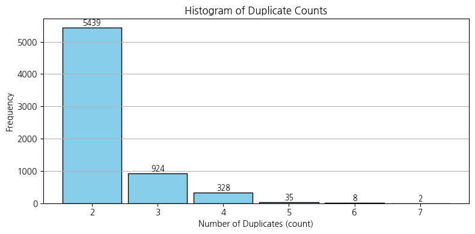
# 3. 출판년도 추출
df_result_sorted['출판년도'] = pd.to_datetime(df_result_sorted['출판년월'], errors='coerce').dt.year
# 출판년도별 count 빈도 집계
year_count_summary = df_result_sorted.groupby('출판년도')['count'].count().reset_index()
# 막대그래프 그리기
plt.figure(figsize=(10, 5))
plt.bar(year_count_summary['출판년도'], year_count_summary['count'], color='skyblue', edgecolor='black')
plt.title('Number of Duplicated Books by Publication Year')
plt.xlabel('Publication Year')
plt.ylabel('Number of Books with Duplicates')
plt.xticks(rotation=45)
plt.grid(axis='y')
plt.tight_layout()
plt.show()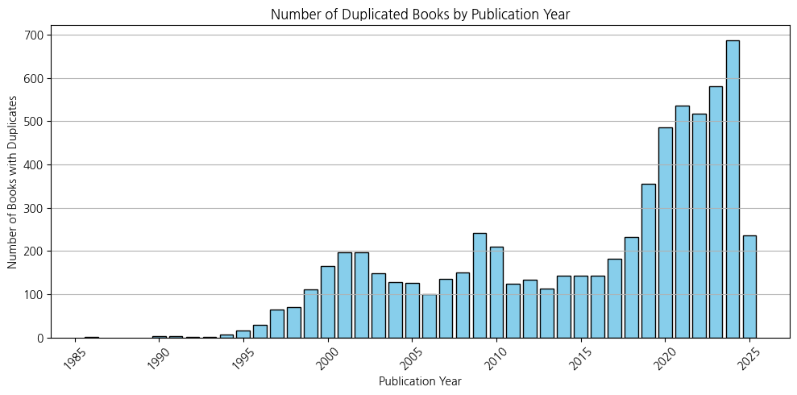
import pandas as pd
import matplotlib.pyplot as plt
# 출판년도 추출
df_result_sorted['출판년도'] = pd.to_datetime(df_result_sorted['출판년월'], errors='coerce').dt.year
# 중복 count를 구간으로 분류
def count_group(c):
if c == 2:
return '2회'
elif c == 3:
return '3회'
else:
return '4회 이상'
df_result_sorted['count_group'] = df_result_sorted['count'].apply(count_group)
# 출판년도 × count_group 조합으로 그룹화
year_group = (
df_result_sorted.groupby(['출판년도', 'count_group'])
.size()
.unstack(fill_value=0)
.sort_index()
)
# 스택 막대그래프 그리기
year_group.plot(kind='bar', stacked=True, figsize=(12, 6), color=['#4da6ff', '#1f77b4', '#08306b'])
plt.title('Duplicated Books by Year and Duplication Level')
plt.xlabel('Publication Year')
plt.ylabel('Number of Books')
plt.xticks(rotation=45)
plt.legend(title='중복 횟수')
plt.tight_layout()
plt.grid(axis='y')
plt.show()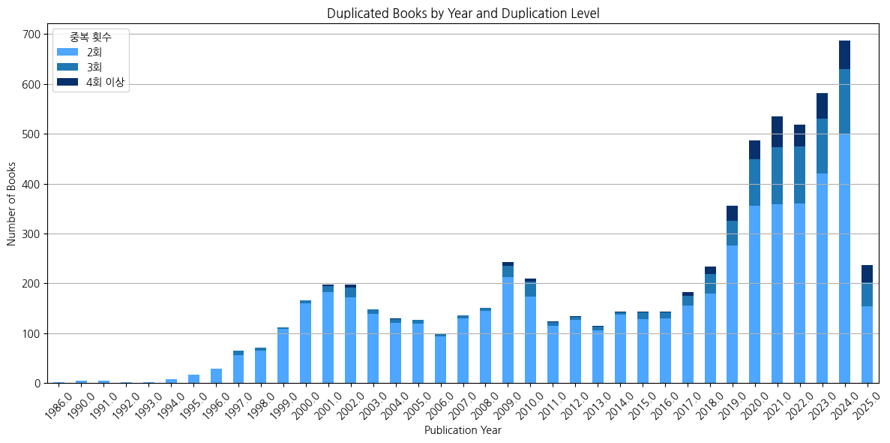
import pandas as pd
import matplotlib.pyplot as plt
# 유니크한 도서 기준 출판년도
tidy_unique = tidy.drop_duplicates(subset='책ID').copy()
tidy_unique['출판년도'] = pd.to_datetime(tidy_unique['출판년월'], errors='coerce').dt.year
total_by_year = tidy_unique['출판년도'].value_counts().sort_index().rename('전체출간').reset_index()
total_by_year.columns = ['출판년도', '전체출간']
# 중복 도서 기준 출판년도 및 중복 그룹
df_result_sorted['출판년도'] = pd.to_datetime(df_result_sorted['출판년월'], errors='coerce').dt.year
df_result_sorted['count_group'] = df_result_sorted['count'].apply(
lambda c: '2회' if c == 2 else '3회' if c == 3 else '4회 이상'
)
# 중복 도서 분포: 출판년도 × 중복 그룹
year_group = (
df_result_sorted.groupby(['출판년도', 'count_group'])
.size()
.unstack(fill_value=0)
.sort_index()
)
# x축 라벨 준비 (정수형으로 고정)
x_years = year_group.index.astype(int)
# 시각화 시작
fig, ax1 = plt.subplots(figsize=(13, 6))
# 스택 막대그래프
bars = year_group.plot(kind='bar', stacked=True, ax=ax1,
color=['#4da6ff', '#1f77b4', '#08306b'])
ax1.set_ylabel('Number of Duplicated Books')
ax1.set_xlabel('Publication Year')
ax1.set_xticks(range(len(x_years)))
ax1.set_xticklabels(x_years, rotation=45)
ax1.grid(axis='y')
ax1.legend(title='중복 횟수', loc='upper left')
# 꺾은선 그래프용 데이터 정리 (출판년도 기준 병합)
merged = pd.merge(year_group, total_by_year, on='출판년도', how='left')
ax2 = ax1.twinx()
ax2.plot(range(len(x_years)), merged['전체출간'], color='orange', marker='o',
linewidth=2.5, label='전체 출간 도서 수')
ax2.set_ylabel('Total Unique Books Published')
ax2.legend(loc='upper right')
plt.title('Duplicate Book Distribution vs Total Published Books by Year')
plt.tight_layout()
plt.show()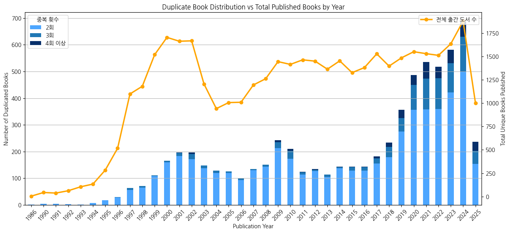
# 기존 피벗 테이블 생성 코드 그대로 유지
pivot_table = unique_books.pivot_table(
index='count',
columns='출판년도',
values='책ID',
aggfunc='count',
fill_value=0
).sort_index()
# 열 방향 합계(출판년도별 총합)를 맨 아래에 '합계' 행으로 추가
pivot_table.loc['합계'] = pivot_table.sum(axis=0)
# 결과 출력
pivot_table| 출판년도 | 2009 | 2010 | 2011 | 2012 | 2013 | 2014 | 2015 | 2016 | 2017 | 2018 | 2019 | 2020 | 2021 | 2022 | 2023 | 2024 | 2025 |
|---|---|---|---|---|---|---|---|---|---|---|---|---|---|---|---|---|---|
| count | |||||||||||||||||
| 1 | 1202 | 1204 | 1339 | 1315 | 1249 | 1309 | 1183 | 1237 | 1345 | 1163 | 1128 | 1064 | 994 | 993 | 1053 | 1190 | 766 |
| 2 | 213 | 173 | 114 | 127 | 105 | 137 | 128 | 129 | 155 | 179 | 275 | 356 | 358 | 360 | 421 | 499 | 154 |
| 3 | 22 | 30 | 8 | 5 | 8 | 5 | 14 | 13 | 19 | 39 | 50 | 93 | 115 | 115 | 110 | 131 | 48 |
| 4 | 6 | 6 | 0 | 2 | 1 | 1 | 1 | 1 | 7 | 14 | 31 | 36 | 60 | 40 | 44 | 43 | 21 |
| 5 | 1 | 1 | 2 | 0 | 0 | 0 | 0 | 0 | 1 | 1 | 0 | 1 | 2 | 3 | 5 | 11 | 7 |
| 6 | 0 | 0 | 0 | 0 | 0 | 0 | 0 | 0 | 0 | 0 | 0 | 0 | 0 | 0 | 1 | 3 | 4 |
| 7 | 0 | 0 | 0 | 0 | 0 | 0 | 0 | 0 | 0 | 0 | 0 | 0 | 0 | 0 | 0 | 0 | 2 |
| 합계 | 1444 | 1414 | 1463 | 1449 | 1363 | 1452 | 1326 | 1380 | 1527 | 1396 | 1484 | 1550 | 1529 | 1511 | 1634 | 1877 | 1002 |
import pandas as pd
import matplotlib.pyplot as plt
# 복사본 사용
df_rec = tidy.copy()
# 출판년도 정제
df_rec['출판년도'] = pd.to_datetime(df_rec['출판년월'], errors='coerce').dt.year
df_rec = df_rec[df_rec['출판년도'].notna()].copy()
df_rec['출판년도'] = df_rec['출판년도'].astype(int)
# 추천평 존재 여부
df_rec['추천유무'] = df_rec['추천평'].notna()
# 출판년도별 전체 수, 추천 있는 수
yearly_total = df_rec.groupby('출판년도').size()
yearly_with_rec = df_rec.groupby('출판년도')['추천유무'].sum()
# 비율 계산
rec_ratio = (yearly_with_rec / yearly_total).round(4)
# 시각화
plt.figure(figsize=(10, 5))
plt.plot(rec_ratio.index, rec_ratio.values, marker='o', color='darkorange', linewidth=2)
plt.title("출판년도별 추천평 존재 비율")
plt.xlabel("출판년도")
plt.ylabel("추천평 있는 책 비율")
plt.grid(True)
# 추천 있는 책 수 라벨 표시
for year, ratio in rec_ratio.items():
label = f"{int(yearly_with_rec[year])}"
plt.text(year, ratio + 0.01, label, ha='center', va='bottom', fontsize=9, color='black')
plt.tight_layout()
plt.show()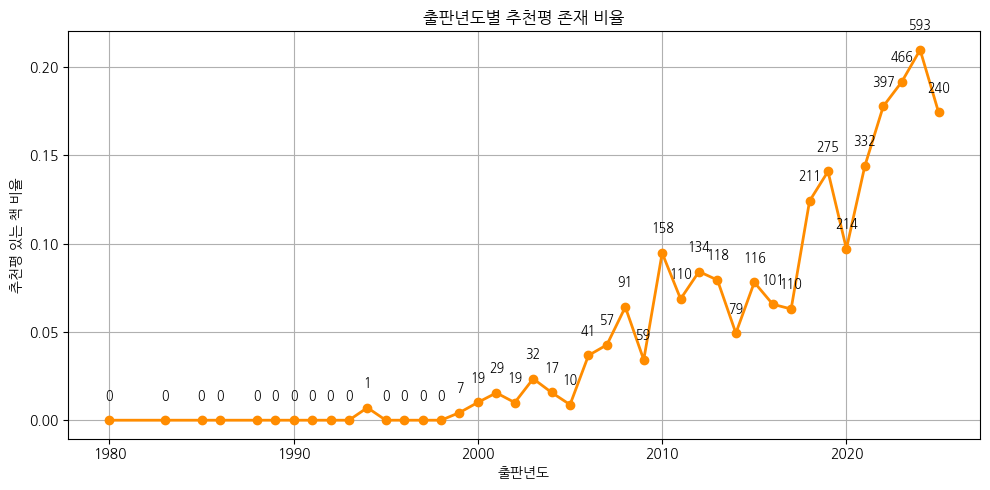
# 1. 원본 복사
df_rec = tidy.copy()
# 2. 출판년도 정제
df_rec['출판년도'] = pd.to_datetime(df_rec['출판년월'], errors='coerce').dt.year
df_rec = df_rec[df_rec['출판년도'] == 1994] # 1994년만
df_rec = df_rec[df_rec['추천평'].notna()] # 추천평 있는 것만
# 3. 결과 확인
print(df_rec[['책ID', '제목', '저자전체', '출판사', '출판년월', '추천평']]) 책ID 제목 저자전체 출판사 출판년월 \
4017 14413 컴퓨터 교과서 만화 2 고려대학습개발원 글수레 1994-11
추천평
4017 1. 컴퓨터의 기본에서부터 사용법과 그 활용에 이르기까지 기초편과 완성편으로 나누어... # 출판년도 정제
tidy['출판년도'] = pd.to_datetime(tidy['출판년월'], errors='coerce').dt.year
# 1994년 + 추천평 존재 조건
df_1994 = tidy[(tidy['출판년도'] == 1994) & (tidy['추천평'].notna())]
# 추천평 전부 출력
for idx, row in df_1994.iterrows():
print(f"책 제목: {row['제목']}")
print(f"책ID: {row['책ID']}")
print(f"저자전체: {row['저자전체']}")
print(f"출판사: {row['출판사']}")
print(f"출판년월: {row['출판년월']}")
print("\n[추천평 전문]")
print(row['추천평'])
print("\n" + "="*80 + "\n")책 제목: 컴퓨터 교과서 만화 2
책ID: 14413
저자전체: 고려대학습개발원
출판사: 글수레
출판년월: 1994-11
[추천평 전문]
1. 컴퓨터의 기본에서부터 사용법과 그 활용에 이르기까지 기초편과 완성편으로 나누어 단계별로 쉽게 설명했다. 2. 초.중학교에서 실제 다루고 있는 시간과 영역을 참고하여 초보자들이 쉽게 익히도록 꾸몄다. 3. 다양한 만화의 여러 주인공들을 통해 컴퓨터를 쉽고 재미있게 이해할 수 있도록 구성하였다. 4. 각 단원의 끝과 하단에는 컴퓨터에 관한 중요 내용들을 정리해 수록하였다. 5. 복잡하고 어려운 설명이나 이론보다는 직접 컴퓨터를 다루는데 필요한 내용만을 쉽고 재미있게 실었다. 펼쳐보기접어보기
================================================================================
# 출판년도 정제
tidy['출판년도'] = pd.to_datetime(tidy['출판년월'], errors='coerce').dt.year
# 1994년 + 추천평 존재 조건
df_1994 = tidy[(tidy['출판년도'] == 1999) & (tidy['추천평'].notna())]
# 추천평 전부 출력
for idx, row in df_1994.iterrows():
print(f"책 제목: {row['제목']}")
print(f"책ID: {row['책ID']}")
print(f"저자전체: {row['저자전체']}")
print(f"출판사: {row['출판사']}")
print(f"출판년월: {row['출판년월']}")
print("\n[추천평 전문]")
print(row['추천평'])
print("\n" + "="*80 + "\n")책 제목: 나는 아직도 인터넷이 낯설다
책ID: 68986
저자전체: 정민영, 김양욱 공저
출판사: 청림출판
출판년월: 1999-10
[추천평 전문]
10여 년 전 대한민국 인터넷의 아침을 열기 위해 전산실 바닥을 함께 기어 다니며 통신망을 설치했던 우리는 인터넷 1세대임을 자부한다. 이제는 차갑고 이성적인 인터넷에서 우리의 마음과 생활에 녹아들어 있는 감정이 통하는 인터넷으로의 도약이 필요하다. 우리나라가 세계 인터넷에 편입된 지 10년 만에 나온 이 책은 바로 이 '뜨거운 인터넷'을 창조하려고 하고 있다. 에세이로 보는 인터넷, 감성이 통하는 인터넷... 차갑고 낯설기만 했던 인터넷을 개척한 그들이 이제 인터넷을 친숙하고 편한 것으로 변화시키려 한다. - 박현재(두루넷 전무이사) 펼쳐보기접어보기
================================================================================
책 제목: e비즈니스.COM
책ID: 72899
저자전체: 척 마틴 저
출판사: 21세기북스
출판년월: 1999-12
[추천평 전문]
독자들은 이 책을 통해 인터넷 혁명 혹은 e-비즈니스 혁명의 흐름에 대해서 구체적으로 깨닫지 못하던 것을 7가지의 사이버 트렌드라는 정리된 모습으로 가깝게 느낄 수 있을 것이다. 그리고 실제 사례로 제시한 많은 선진 기업들의 모습 속에서 우리가 나아가야 할 e-비즈니스의 베스트 프랙티스(Best Practice)를 발견할 수 있을 것이다. 장중호(PwC e-business practice 팀장) 펼쳐보기접어보기
================================================================================
책 제목: 넷츠고에서 멀티미디어 홈페이지 만들기
책ID: 67391
저자전체: 넷츠고 교육센터
출판사: 영진닷컴
출판년월: 1999-08
[추천평 전문]
넷츠고 브라우저 등 유용한 프로그램들이 담긴 CD-ROM과 넷츠고 7일 무료 이용권이 포함된 별책부록이 제공된다. 펼쳐보기접어보기
================================================================================
책 제목: e비즈니스.COM
책ID: 72899
저자전체: 척 마틴 저
출판사: 21세기북스
출판년월: 1999-12
[추천평 전문]
독자들은 이 책을 통해 인터넷 혁명 혹은 e-비즈니스 혁명의 흐름에 대해서 구체적으로 깨닫지 못하던 것을 7가지의 사이버 트렌드라는 정리된 모습으로 가깝게 느낄 수 있을 것이다. 그리고 실제 사례로 제시한 많은 선진 기업들의 모습 속에서 우리가 나아가야 할 e-비즈니스의 베스트 프랙티스(Best Practice)를 발견할 수 있을 것이다. 장중호(PwC e-business practice 팀장) 펼쳐보기접어보기
================================================================================
책 제목: Photoshop Channel Chops
책ID: 9226
저자전체: Biedny David 등저
출판사: 안그라픽스
출판년월: 1999-01
[추천평 전문]
포토숍 채널 작업은 알파 채널, 고급 마스킹 기법, 채널간의 수학적 개념, 그리고 레이어의 창의적인 사용에 대해 다룬 본격적인 안내서 입니다. 데이빗 비드니, 버트 먼로이, 네이탄 무디 이 세 사람의 전문가들이 출판, CD-ROM, 펼쳐보기접어보기
================================================================================
책 제목: 성공적인 소프트웨어 개발 방법론 (하)
책ID: 14943
저자전체: 윤청
출판사: 생능출판사
출판년월: 1999-08
[추천평 전문]
상권에서는 소프트웨어 개발의 초기 단계인 요구사항 분석을 중심으로 설명되어 있고 설계의 일부분을 다루었다. 하권에서는 상권에 이어 구체적인 설계 기법, 프로그래밍, 시험(테스팅)을 포함한 개발 과정과 유지보수 과정을 정리하여 소프트웨어 라이프사이클 전 과정을 포함하려 노력하였다. 특히 구체적인 설계기법, 시험기법 및 품질 보증을 위해 요구되는 기술적, 관리적 측면을 다루려고 시도하였다. 1장에서는 상권에서 다룬 소프트웨어 공학 및 요구사항 분석에 대한 요약이 기술되어 있다. 2장에서 7장 까지는 설계 과정에 대한 내용을 담고 있다. 소프트웨어 설계에 대한 기본 개념이 2장에 소개되어 있고, 자료흐름 중심의 구조적 설계기법이 3장에서 다루어졌다. 4장에서는 실시간 시스템의 설계를 위한 동적 설계 기법을 소개하였고, 5장에서는 자료구조 및 데이터베이스 설계를 위한 데이터 설계 기법을 다루고 있다. 6장에서는 객체지향 설계 기법을 소개하고 있으며, 7장에서는 사용자 인터페이스에 관한 내용을 다루고 있다. 8장에서는 상세 설계 단계에서 사용되는 표기법인 순서도, N-S 도표, 프로그램 설계언어 등을 중심으로 설명이 이루어졌다. 9장에서는 프로그래밍 단계와 사용 언어에 대해 소개하고 있으며, 주석문을 달 때 사용할 수 있는 가이드라인을 제시하고 있다. 10장에서는 코드 검사의 개념, 코드 검사의 계획과 진행, 사후 검토 등에 대해 다루고 있다. 11장은 소프트웨어 품질 개념을 소개하고 있으며, 품질 요소 및 기술 검토 기법을 기술하고 있다. 12장에서는 소프트웨어 시험 기법 및 단계에 대하여 설명이 이루어졌으며, 마지막 장인 13장에서는 소프트웨어 유지보수와 형상 관리에 대하여 살펴보았다. 소프트웨어 제품의 품질을 향상시킬 수 있는 길은 기술력과 자기 혁신 이외에는 대안이 없다. 특히 저자는 이 책에서 미래 사회를 주도할 정보통신 분야, 특히 소프트웨어 분야의 기술 경쟁력을 강화할 수 있는 방법을 제시하였다. 소프트웨어의 경쟁력은 기술력을 바탕으로 가능하며, 기술력은 체계적인 공법과 바른 원칙을 바탕으로 해야 한다. 우리 모두가 제품 개발의 바른 원칙과 이론을 배우고 실천할 때 기술력은 물론 제품의 품질이 향상되고, 외국과의 경쟁에서 이길 수 있는 토양이 마련될 수 있다. 이 책에서는 이를 위한 구체적이며 실천 가능한 방법과 기법들이 포함되어 있다. 또한 발전을 위한 변화는 바른 원리를 바탕으로 한 시각의 변화를 요구한다. 이 책에서 다루는 주된 내용은 경쟁력과 기술력 향상을 위해 필요한 시각의 변화 및 바른 원리를 독자들에게 제시하는 것이다. 특히 개발자 관점에서 사용자 및 고객 관점으로, 결과를 중요시하던 관점에서 과정이 더욱 중요시 되는 관점으로, 코딩 위주의 개발 방법에서 개발과정을 체계화, 조직화하여 그 결과를 문서화하고 검증하는 관점으로 시각의 변화가 요구된다. 펼쳐보기접어보기
================================================================================
책 제목: 성공적인 소프트웨어 개발 방법론 (상)
책ID: 14962
저자전체: 윤청
출판사: 생능출판사
출판년월: 1999-02
[추천평 전문]
상권에서는 소프트웨어 개발의 초기 단계인 요구사항 분석을 중심으로 설명되어 있고 설계의 일부분을 다루었다. 하권에서는 상권에 이어 구체적인 설계 기법, 프로그래밍, 시험(테스팅)을 포함한 개발 과정과 유지보수 과정을 정리하여 소프트웨어 라이프사이클 전 과정을 포함하려 노력하였다. 특히 구체적인 설계기법, 시험기법 및 품질 보증을 위해 요구되는 기술적, 관리적 측면을 다루려고 시도하였다. 1장에서는 상권에서 다룬 소프트웨어 공학 및 요구사항 분석에 대한 요약이 기술되어 있다. 2장에서 7장 까지는 설계 과정에 대한 내용을 담고 있다. 소프트웨어 설계에 대한 기본 개념이 2장에 소개되어 있고, 자료흐름 중심의 구조적 설계기법이 3장에서 다루어졌다. 4장에서는 실시간 시스템의 설계를 위한 동적 설계 기법을 소개하였고, 5장에서는 자료구조 및 데이터베이스 설계를 위한 데이터 설계 기법을 다루고 있다. 6장에서는 객체지향 설계 기법을 소개하고 있으며, 7장에서는 사용자 인터페이스에 관한 내용을 다루고 있다. 8장에서는 상세 설계 단계에서 사용되는 표기법인 순서도, N-S 도표, 프로그램 설계언어 등을 중심으로 설명이 이루어졌다. 9장에서는 프로그래밍 단계와 사용 언어에 대해 소개하고 있으며, 주석문을 달 때 사용할 수 있는 가이드라인을 제시하고 있다. 10장에서는 코드 검사의 개념, 코드 검사의 계획과 진행, 사후 검토 등에 대해 다루고 있다. 11장은 소프트웨어 품질 개념을 소개하고 있으며, 품질 요소 및 기술 검토 기법을 기술하고 있다. 12장에서는 소프트웨어 시험 기법 및 단계에 대하여 설명이 이루어졌으며, 마지막 장인 13장에서는 소프트웨어 유지보수와 형상 관리에 대하여 살펴보았다. 소프트웨어 제품의 품질을 향상시킬 수 있는 길은 기술력과 자기 혁신 이외에는 대안이 없다. 특히 저자는 이 책에서 미래 사회를 주도할 정보통신 분야, 특히 소프트웨어 분야의 기술 경쟁력을 강화할 수 있는 방법을 제시하였다. 소프트웨어의 경쟁력은 기술력을 바탕으로 가능하며, 기술력은 체계적인 공법과 바른 원칙을 바탕으로 해야 한다. 우리 모두가 제품 개발의 바른 원칙과 이론을 배우고 실천할 때 기술력은 물론 제품의 품질이 향상되고, 외국과의 경쟁에서 이길 수 있는 토양이 마련될 수 있다. 이 책에서는 이를 위한 구체적이며 실천 가능한 방법과 기법들이 포함되어 있다. 또한 발전을 위한 변화는 바른 원리를 바탕으로 한 시각의 변화를 요구한다. 이 책에서 다루는 주된 내용은 경쟁력과 기술력 향상을 위해 필요한 시각의 변화 및 바른 원리를 독자들에게 제시하는 것이다. 특히 개발자 관점에서 사용자 및 고객 관점으로, 결과를 중요시하던 관점에서 과정이 더욱 중요시 되는 관점으로, 코딩 위주의 개발 방법에서 개발과정을 체계화, 조직화하여 그 결과를 문서화하고 검증하는 관점으로 시각의 변화가 요구된다. 펼쳐보기접어보기
================================================================================
import matplotlib.pyplot as plt
import seaborn as sns
import pandas as pd
df_rec = tidy.copy()
# 출판년도 추출
df_rec['출판년도'] = pd.to_datetime(df_rec['출판년월'], errors='coerce').dt.year
# 추천평 유무 컬럼 생성
df_rec['추천평유무'] = df_rec['추천평'].notna()
# 최근 5개년 필터링 + copy()
recent_years = [2020, 2021, 2022, 2023, 2024]
filtered = df_rec[df_rec['출판년도'].isin(recent_years)].copy()
# 시각화를 위한 텍스트 변환
filtered['추천평유무'] = filtered['추천평유무'].map({True: '추천평 있음', False: '추천평 없음'})
# 상자그림 시각화
plt.figure(figsize=(14, 6))
sns.boxplot(data=filtered, x='출판년도', y='별점', hue='추천평유무')
plt.title('년도별 추천평 유무에 따른 별점 비교')
plt.ylabel('별점')
plt.xlabel('출판년도')
plt.legend(title='추천평')
plt.grid(axis='y')
plt.tight_layout()
plt.show()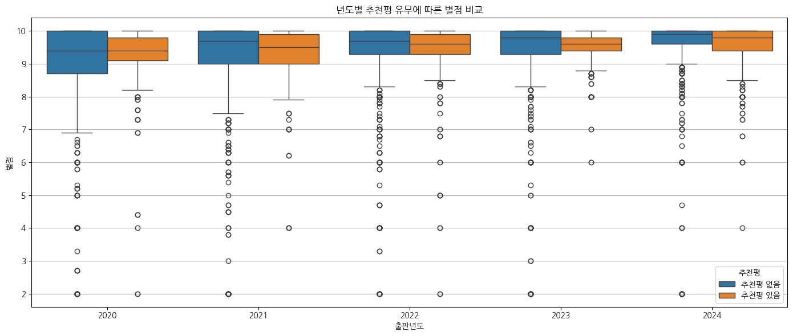
import matplotlib.pyplot as plt
import seaborn as sns
import pandas as pd
df_rec = tidy.copy()
# 출판년도 추출
df_rec['출판년도'] = pd.to_datetime(df_rec['출판년월'], errors='coerce').dt.year
# 추천평 유무 컬럼 생성
df_rec['추천평유무'] = df_rec['추천평'].notna()
# 최근 5개년 필터링 + copy()
recent_years = [2020, 2021, 2022, 2023, 2024]
filtered = df_rec[df_rec['출판년도'].isin(recent_years)].copy()
# 시각화를 위한 텍스트 변환
filtered['추천평유무'] = filtered['추천평유무'].map({True: '추천평 있음', False: '추천평 없음'})
# 상자그림 시각화
plt.figure(figsize=(14, 6))
sns.boxplot(data=filtered, x='출판년도', y='판매지수', hue='추천평유무')
plt.title('년도별 추천평 유무에 따른 판매지수 비교')
plt.ylabel('판매지수')
plt.xlabel('출판년도')
plt.legend(title='추천평')
plt.grid(axis='y')
plt.tight_layout()
plt.show()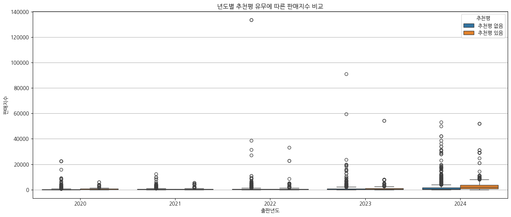
import matplotlib.pyplot as plt
import seaborn as sns
import pandas as pd
df_rec = tidy.copy()
# 출판년도 추출
df_rec['출판년도'] = pd.to_datetime(df_rec['출판년월'], errors='coerce').dt.year
# 추천평 유무 컬럼 생성
df_rec['추천평유무'] = df_rec['추천평'].notna()
# 최근 5개년 필터링 + copy()
recent_years = [2006, 2007, 2008, 2009, 2010]
filtered = df_rec[df_rec['출판년도'].isin(recent_years)].copy()
# 시각화를 위한 텍스트 변환
filtered['추천평유무'] = filtered['추천평유무'].map({True: '추천평 있음', False: '추천평 없음'})
# 상자그림 시각화
plt.figure(figsize=(14, 6))
sns.boxplot(data=filtered, x='출판년도', y='판매지수', hue='추천평유무')
plt.title('년도별 추천평 유무에 따른 판매지수 비교')
plt.ylabel('판매지수')
plt.xlabel('출판년도')
plt.legend(title='추천평')
plt.grid(axis='y')
plt.tight_layout()
plt.show()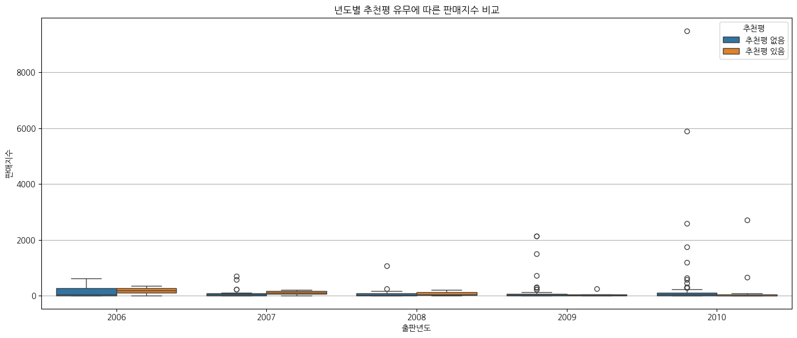
df_rec = tidy.copy()
# 1. 출판년도 컬럼 추가
df_rec['출판년도'] = pd.to_datetime(df_rec['출판년월'], errors='coerce').dt.year
# 2. 추천평 유무 플래그
df_rec['추천평유무'] = df_rec['추천평'].notna()
# 3. 연도별 판매지수 상위 200권씩 추출
top200 = (
df_rec.dropna(subset=['판매지수'])
.sort_values(['출판년도', '판매지수'], ascending=[True, False])
.groupby('출판년도')
.head(200)
.copy()
)
# 4. 연도별 추천평 비율 계산
rec_ratio = (
top200.groupby('출판년도')['추천평유무']
.mean()
.round(4)
.reset_index(name='추천평비율')
)
# 5. 시각화
import matplotlib.pyplot as plt
plt.figure(figsize=(10, 5))
plt.plot(rec_ratio['출판년도'], rec_ratio['추천평비율'], marker='o', color='green')
plt.title('연도별 판매지수 상위 200권 중 추천평 존재 비율')
plt.xlabel('출판년도')
plt.ylabel('추천평 비율')
plt.grid(True)
plt.tight_layout()
plt.show()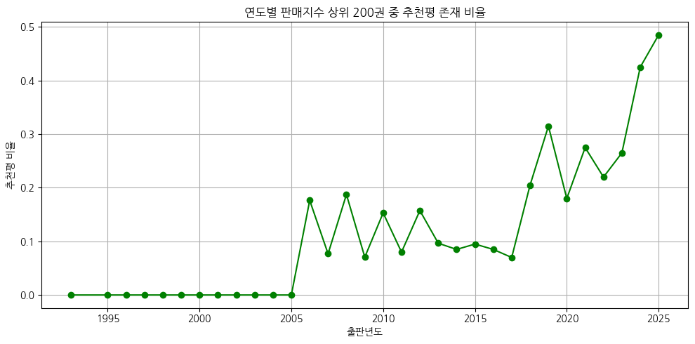
df_rec = tidy.copy()
# 1. 출판년도 컬럼 추가
df_rec['출판년도'] = pd.to_datetime(df_rec['출판년월'], errors='coerce').dt.year
# 2. 추천평 유무 플래그
df_rec['추천평유무'] = df_rec['추천평'].notna()
# 중분류 기준으로 판매지수 상위 200권씩 추출
top200_by_cat = (
df_rec.dropna(subset=['판매지수', '분류'])
.sort_values(['분류', '판매지수'], ascending=[True, False])
.groupby('분류')
.head(200)
.copy()
)
# 추천평 비율 계산
rec_ratio_by_cat = (
top200_by_cat.groupby('분류')['추천평유무']
.mean()
.round(4)
.reset_index(name='추천비율')
.sort_values('추천비율', ascending=False)
)
# 결과 확인
print(rec_ratio_by_cat) # 추천 비율 높은 순 분류 추천비율
8 인공지능 0.505
10 컴퓨터 공학 0.475
7 웹사이트 0.415
13 프로그래밍 언어 0.410
0 OS/데이터베이스 0.350
9 인터넷 비즈니스 0.350
3 네트워크/해킹/보안 0.320
12 컴퓨터 입문/활용 0.275
1 게임 0.210
2 그래픽/디자인/멀티미디어 0.180
4 모바일 프로그래밍 0.140
6 오피스 활용 0.115
5 모바일/태블릿/SNS 0.105
11 컴퓨터 수험서 0.065df_rec = tidy.copy()
# 1. 출판년도 컬럼 추가
df_rec['출판년도'] = pd.to_datetime(df_rec['출판년월'], errors='coerce').dt.year
# 2. 추천평 유무 플래그
df_rec['추천평유무'] = df_rec['추천평'].notna()
# 3. 중분류 기준으로 판매지수 상위 200권씩 추출
top200_by_cat = (
df_rec.dropna(subset=['판매지수', '분류'])
.sort_values(['분류', '판매지수'], ascending=[True, False])
.groupby('분류')
.head(200)
.copy()
)
# 4. 상위 200권 기준 추천평 비율 계산
top200_ratio = (
top200_by_cat.groupby('분류')['추천평유무']
.mean()
.round(4)
.reset_index(name='상위200추천평비율')
)
# 5. 전체 기준 추천평 비율 계산
total_ratio = (
df_rec.dropna(subset=['분류']) # '분류' 없는 건 제외
.groupby('분류')['추천평유무']
.mean()
.round(4)
.reset_index(name='전체추천평비율')
)
# 6. 두 비율을 병합
merged = pd.merge(top200_ratio, total_ratio, on='분류').sort_values('상위200추천평비율', ascending=False)
# 결과 확인
merged| 분류 | 상위200추천평비율 | 전체추천평비율 | |
|---|---|---|---|
| 8 | 인공지능 | 0.505 | 0.1677 |
| 10 | 컴퓨터 공학 | 0.475 | 0.1281 |
| 7 | 웹사이트 | 0.415 | 0.1429 |
| 13 | 프로그래밍 언어 | 0.410 | 0.0938 |
| 0 | OS/데이터베이스 | 0.350 | 0.1313 |
| 9 | 인터넷 비즈니스 | 0.350 | 0.1643 |
| 3 | 네트워크/해킹/보안 | 0.320 | 0.0876 |
| 12 | 컴퓨터 입문/활용 | 0.275 | 0.0420 |
| 1 | 게임 | 0.210 | 0.0692 |
| 2 | 그래픽/디자인/멀티미디어 | 0.180 | 0.0344 |
| 4 | 모바일 프로그래밍 | 0.140 | 0.1247 |
| 6 | 오피스 활용 | 0.115 | 0.0199 |
| 5 | 모바일/태블릿/SNS | 0.105 | 0.0770 |
| 11 | 컴퓨터 수험서 | 0.065 | 0.0109 |
def calc_ratio_by_top_n(df, n):
top_n = (
df.dropna(subset=['판매지수', '분류'])
.sort_values(['분류', '판매지수'], ascending=[True, False])
.groupby('분류')
.head(n)
.copy()
)
ratio = (
top_n.groupby('분류')['추천평유무']
.mean()
.round(4)
.reset_index(name=f'상위{n}추천평비율')
)
return ratio
# 추천 비율 계산
ratio30 = calc_ratio_by_top_n(df_rec, 30)
ratio50 = calc_ratio_by_top_n(df_rec, 50)
ratio100 = calc_ratio_by_top_n(df_rec, 100)
ratio200 = calc_ratio_by_top_n(df_rec, 200)
ratio500 = calc_ratio_by_top_n(df_rec, 500)
# 전체 추천 비율 + 전체 책 수
total_stats = (
df_rec.dropna(subset=['분류'])
.groupby('분류')
.agg(
전체추천평비율=('추천평유무', 'mean'),
책수=('책ID', 'count')
)
.round(4)
.reset_index()
)
# 병합
merged_all = total_stats.merge(ratio30, on='분류', how='left') \
.merge(ratio50, on='분류', how='left') \
.merge(ratio100, on='분류', how='left') \
.merge(ratio200, on='분류', how='left') \
.merge(ratio500, on='분류', how='left') \
.sort_values('상위200추천평비율', ascending=False)
# 결과
merged_all| 분류 | 전체추천평비율 | 책수 | 상위30추천평비율 | 상위50추천평비율 | 상위100추천평비율 | 상위200추천평비율 | 상위500추천평비율 | |
|---|---|---|---|---|---|---|---|---|
| 8 | 인공지능 | 0.1677 | 2170 | 0.6333 | 0.68 | 0.56 | 0.505 | 0.3780 |
| 10 | 컴퓨터 공학 | 0.1281 | 7406 | 0.5333 | 0.56 | 0.51 | 0.475 | 0.4080 |
| 7 | 웹사이트 | 0.1429 | 2331 | 0.4667 | 0.48 | 0.50 | 0.415 | 0.3080 |
| 13 | 프로그래밍 언어 | 0.0938 | 7624 | 0.3333 | 0.38 | 0.41 | 0.410 | 0.3320 |
| 0 | OS/데이터베이스 | 0.1313 | 3327 | 0.2667 | 0.24 | 0.34 | 0.350 | 0.3380 |
| 9 | 인터넷 비즈니스 | 0.1643 | 1150 | 0.4667 | 0.44 | 0.44 | 0.350 | 0.2506 |
| 3 | 네트워크/해킹/보안 | 0.0876 | 2511 | 0.2333 | 0.30 | 0.36 | 0.320 | 0.2200 |
| 12 | 컴퓨터 입문/활용 | 0.0420 | 4071 | 0.6000 | 0.48 | 0.40 | 0.275 | 0.1780 |
| 1 | 게임 | 0.0692 | 1618 | 0.3000 | 0.34 | 0.28 | 0.210 | 0.1481 |
| 2 | 그래픽/디자인/멀티미디어 | 0.0344 | 6706 | 0.3333 | 0.32 | 0.22 | 0.180 | 0.1340 |
| 4 | 모바일 프로그래밍 | 0.1247 | 954 | 0.3333 | 0.28 | 0.21 | 0.140 | 0.1524 |
| 6 | 오피스 활용 | 0.0199 | 3418 | 0.3667 | 0.28 | 0.18 | 0.115 | 0.0640 |
| 5 | 모바일/태블릿/SNS | 0.0770 | 844 | 0.2333 | 0.16 | 0.14 | 0.105 | 0.0784 |
| 11 | 컴퓨터 수험서 | 0.0109 | 5772 | 0.0667 | 0.10 | 0.07 | 0.065 | 0.0440 |
df_rec = tidy.copy()
# 추천 유무 플래그
df_rec['추천유무'] = df_rec['추천평'].notna()
# 책ID 기준 중복 제거
unique_books = df_rec.drop_duplicates(subset='책ID').copy()
# 출판사별 책 수 집계
book_counts = (
unique_books.groupby('출판사')['책ID']
.count()
.reset_index(name='고유책수')
)
# 출판사별 추천평 비율 계산
rec_ratio = (
unique_books.groupby('출판사')['추천유무']
.mean()
.round(4)
.reset_index(name='추천비율')
)
# 병합 후 상위 20개 출판사 기준으로 필터링
merged = pd.merge(book_counts, rec_ratio, on='출판사')
top20 = merged.sort_values('고유책수', ascending=False).head(20)
# 시각화
import matplotlib.pyplot as plt
plt.figure(figsize=(12, 6))
plt.barh(top20['출판사'], top20['추천비율'], color='skyblue')
for i, v in enumerate(top20['고유책수']):
plt.text(top20['추천비율'].iloc[i] + 0.01, i, f"{v}권", va='center')
plt.xlabel('추천평 비율')
plt.title('출판사별 추천평 비율 (상위 20개 고유 도서 기준)')
plt.gca().invert_yaxis()
plt.tight_layout()
plt.show()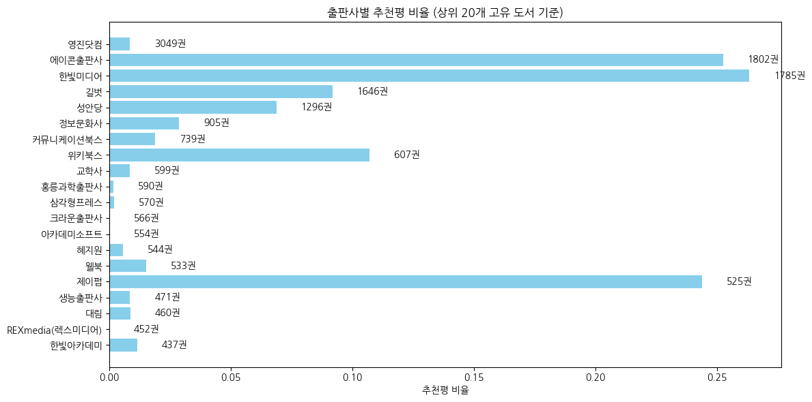
# 복사 및 중복 제거
df_rec = tidy.copy()
df_rec_unique = df_rec.drop_duplicates(subset='책ID').copy()
# 관심 있는 출판사 목록
selected_publishers = ['에이콘출판사', '한빛미디어', '길벗', '위키북스', '제이펍']
# 해당 출판사 데이터만 필터링
filtered_df = df_rec_unique[df_rec_unique['출판사'].isin(selected_publishers)]
# 출판사별 '분류' 기준 출간 권수 집계
publisher_fields = (
filtered_df.groupby(['출판사', '분류'])['책ID']
.count()
.reset_index(name='책수')
.sort_values(['출판사', '책수'], ascending=[True, False])
)
# 각 출판사별 상위 5개 분야 추출
top5_fields_by_publisher = publisher_fields.groupby('출판사').head(5)
# 결과 출력
print(top5_fields_by_publisher) 출판사 분류 책수
10 길벗 컴퓨터 수험서 615
2 길벗 그래픽/디자인/멀티미디어 231
12 길벗 프로그래밍 언어 170
11 길벗 컴퓨터 입문/활용 160
6 길벗 오피스 활용 156
25 에이콘출판사 프로그래밍 언어 477
16 에이콘출판사 네트워크/해킹/보안 297
22 에이콘출판사 컴퓨터 공학 281
13 에이콘출판사 OS/데이터베이스 229
20 에이콘출판사 웹사이트 147
39 위키북스 프로그래밍 언어 200
36 위키북스 컴퓨터 공학 103
33 위키북스 웹사이트 78
26 위키북스 OS/데이터베이스 53
30 위키북스 모바일 프로그래밍 41
52 제이펍 프로그래밍 언어 148
50 제이펍 컴퓨터 공학 100
40 제이펍 OS/데이터베이스 69
47 제이펍 웹사이트 41
44 제이펍 모바일 프로그래밍 39
66 한빛미디어 프로그래밍 언어 567
53 한빛미디어 OS/데이터베이스 235
55 한빛미디어 그래픽/디자인/멀티미디어 176
60 한빛미디어 웹사이트 157
63 한빛미디어 컴퓨터 공학 140import pandas as pd
import matplotlib.pyplot as plt
import seaborn as sns
# 복사 및 중복 제거
df = tidy.copy()
df = df.drop_duplicates(subset='책ID').copy()
# 추천 유무 플래그
df['추천유무'] = df['추천평'].notna()
# 결측치 제거
df_plot = df.dropna(subset=['별점', '분류'])
# 상자그림 그리기
plt.figure(figsize=(14, 8))
sns.boxplot(data=df_plot, x='분류', y='별점', hue='추천유무')
plt.xticks(rotation=45, ha='right')
plt.xlabel('분류')
plt.ylabel('별점')
plt.title('분야별 추천유무에 따른 별점 분포')
plt.tight_layout()
plt.show()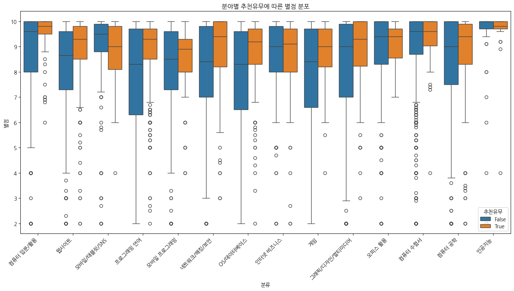
import pandas as pd
import matplotlib.pyplot as plt
import seaborn as sns
# 복사 및 중복 제거
df = tidy.copy()
df = df.drop_duplicates(subset='책ID').copy()
# 추천 유무 플래그
df['추천유무'] = df['추천평'].notna()
# 결측치 제거
df_plot = df.dropna(subset=['리뷰수', '분류'])
# 리뷰수 평균을 분야 + 추천유무 기준으로 집계
grouped = df_plot.groupby(['분류', '추천유무'])['리뷰수'].mean().reset_index()
# 막대그래프
plt.figure(figsize=(14, 6))
sns.barplot(data=grouped, x='분류', y='리뷰수', hue='추천유무')
plt.xticks(rotation=45, ha='right')
plt.title('분야별 추천유무에 따른 리뷰수 평균 비교')
plt.tight_layout()
plt.show()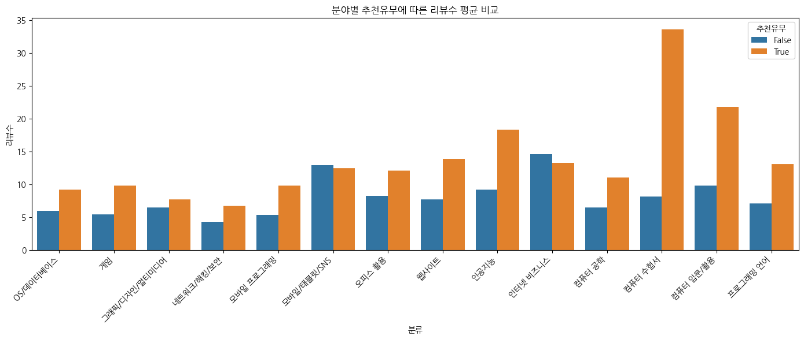
import pandas as pd
import matplotlib.pyplot as plt
import seaborn as sns
# 복사 및 중복 제거
df = tidy.copy()
df = df.drop_duplicates(subset='책ID').copy()
# 추천 유무 플래그
df['추천유무'] = df['추천평'].notna()
# 결측치 제거
df_plot = df.dropna(subset=['리뷰수', '분류'])
# 리뷰수 중앙값을 분야 + 추천유무 기준으로 집계
grouped = df_plot.groupby(['분류', '추천유무'])['리뷰수'].median().reset_index()
# 막대그래프
plt.figure(figsize=(14, 6))
sns.barplot(data=grouped, x='분류', y='리뷰수', hue='추천유무')
plt.xticks(rotation=45, ha='right')
plt.title('분야별 추천유무에 따른 리뷰수 중앙값 비교')
plt.tight_layout()
plt.show()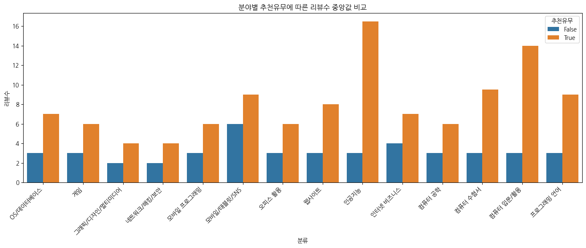
import pandas as pd
import matplotlib.pyplot as plt
import seaborn as sns
# 복사 및 중복 제거
df = tidy.copy()
df = df.drop_duplicates(subset='책ID').copy()
# 추천 유무 플래그
df['추천유무'] = df['추천평'].notna()
# 출판년도 컬럼 생성
df['출판년도'] = pd.to_datetime(df['출판년월'], errors='coerce').dt.year
# 2020년 이후 필터링 + 결측치 제거
df_plot = df[(df['출판년도'] >= 2020) & df['판매지수'].notna() & df['분류'].notna()].copy()
# 판매지수 중앙값 집계
grouped = df_plot.groupby(['분류', '추천유무'])['판매지수'].median().reset_index()
# 시각화
plt.figure(figsize=(14, 6))
sns.barplot(data=grouped, x='분류', y='판매지수', hue='추천유무')
plt.xticks(rotation=45, ha='right')
plt.title('2020년 이후 분야별 추천유무에 따른 판매지수 중앙값 비교')
plt.tight_layout()
plt.show()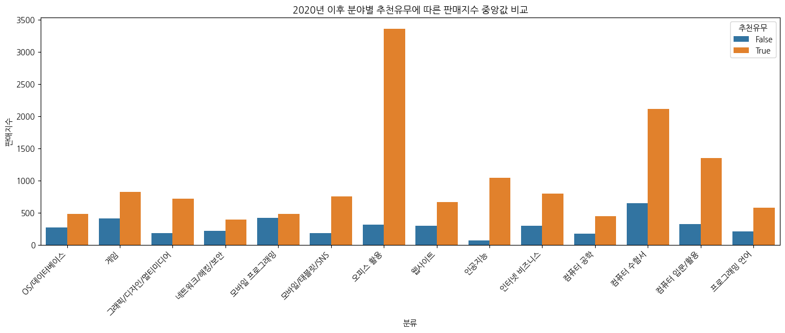
pivot = grouped.pivot(index='분류', columns='추천유무', values='판매지수')
pivot['배수'] = (pivot[True] / pivot[False]).round(2)
pivot.sort_values('배수', ascending=False)| 추천유무 | False | True | 배수 |
|---|---|---|---|
| 분류 | |||
| 인공지능 | 72.0 | 1041.0 | 14.46 |
| 오피스 활용 | 318.0 | 3366.0 | 10.58 |
| 컴퓨터 입문/활용 | 324.0 | 1356.0 | 4.19 |
| 모바일/태블릿/SNS | 183.0 | 756.0 | 4.13 |
| 그래픽/디자인/멀티미디어 | 186.0 | 720.0 | 3.87 |
| 컴퓨터 수험서 | 648.0 | 2118.0 | 3.27 |
| 프로그래밍 언어 | 210.0 | 579.0 | 2.76 |
| 인터넷 비즈니스 | 297.0 | 801.0 | 2.70 |
| 컴퓨터 공학 | 177.0 | 450.0 | 2.54 |
| 웹사이트 | 300.0 | 669.0 | 2.23 |
| 게임 | 414.0 | 822.0 | 1.99 |
| 네트워크/해킹/보안 | 222.0 | 393.0 | 1.77 |
| OS/데이터베이스 | 276.0 | 480.0 | 1.74 |
| 모바일 프로그래밍 | 423.0 | 486.0 | 1.15 |
import pandas as pd
# 파일 불러오기
df_0517 = pd.read_csv("subctgr_0510_17.csv")
df_0608 = pd.read_csv("subctgr_0608_17.csv")
# 열 이름 통일 (product_count에 날짜명 붙이기)
df_0517 = df_0517.rename(columns={'product_count': '0510_product_count'})
df_0608 = df_0608.rename(columns={'product_count': '0608_product_count'})
# 비교에 필요한 열만 추출
df_0517 = df_0517[['category', 'subcategory', '0510_product_count']]
df_0608 = df_0608[['category', 'subcategory', '0608_product_count']]
# 두 날짜 기준 데이터 병합
merged = pd.merge(df_0517, df_0608, on=['category', 'subcategory'], how='inner')
# 증가량 계산
merged['증가량'] = merged['0608_product_count'] - merged['0510_product_count']
# 증가량 기준 내림차순 정렬
result = merged.sort_values(by='증가량', ascending=False).reset_index(drop=True)
# 결과 확인
result| category | subcategory | 0510_product_count | 0608_product_count | 증가량 | |
|---|---|---|---|---|---|
| 0 | 인공지능 | 인공지능 일반 | 1346 | 1451 | 105 |
| 1 | 인공지능 | 생성형 AI | 348 | 373 | 25 |
| 2 | 컴퓨터 공학 | 인공지능 | 1356 | 1373 | 17 |
| 3 | 그래픽/디자인/멀티미디어 | 그래픽툴/저작툴 기타 | 962 | 976 | 14 |
| 4 | 프로그래밍 언어 | 프로그래밍 언어 기타 | 1598 | 1611 | 13 |
| ... | ... | ... | ... | ... | ... |
| 113 | OS/데이터베이스 | SQL Server | 210 | 210 | 0 |
| 114 | OS/데이터베이스 | MAC OS | 68 | 68 | 0 |
| 115 | OS/데이터베이스 | 유닉스 | 195 | 195 | 0 |
| 116 | OS/데이터베이스 | Access | 145 | 145 | 0 |
| 117 | OS/데이터베이스 | MySQL | 120 | 120 | 0 |
118 rows × 5 columns
result.head(15)| category | subcategory | 0510_product_count | 0608_product_count | 증가량 | |
|---|---|---|---|---|---|
| 0 | 인공지능 | 인공지능 일반 | 1346 | 1451 | 105 |
| 1 | 인공지능 | 생성형 AI | 348 | 373 | 25 |
| 2 | 컴퓨터 공학 | 인공지능 | 1356 | 1373 | 17 |
| 3 | 그래픽/디자인/멀티미디어 | 그래픽툴/저작툴 기타 | 962 | 976 | 14 |
| 4 | 프로그래밍 언어 | 프로그래밍 언어 기타 | 1598 | 1611 | 13 |
| 5 | 컴퓨터 입문/활용 | 어른을 위한 컴퓨터 | 1491 | 1503 | 12 |
| 6 | 인터넷 비즈니스 | 인터넷 마케팅 | 331 | 342 | 11 |
| 7 | 컴퓨터 공학 | 컴퓨터 교육 | 817 | 827 | 10 |
| 8 | 컴퓨터 공학 | 소프트웨어 공학 | 1113 | 1123 | 10 |
| 9 | 프로그래밍 언어 | 프로그래밍 교육 | 653 | 661 | 8 |
| 10 | 컴퓨터 입문/활용 | 어린이 컴퓨터 | 1129 | 1136 | 7 |
| 11 | 인공지능 | 머신러닝/딥러닝 | 420 | 426 | 6 |
| 12 | 오피스 활용 | MS Office | 170 | 176 | 6 |
| 13 | 컴퓨터 입문/활용 | 인터넷 입문서 | 876 | 882 | 6 |
| 14 | OS/데이터베이스 | 클라우드/빅데이터 | 1135 | 1140 | 5 |
result.tail(15)| category | subcategory | 0510_product_count | 0608_product_count | 증가량 | |
|---|---|---|---|---|---|
| 103 | 프로그래밍 언어 | JSP | 127 | 127 | 0 |
| 104 | 프로그래밍 언어 | ASP | 183 | 183 | 0 |
| 105 | 프로그래밍 언어 | PHP | 154 | 154 | 0 |
| 106 | 프로그래밍 언어 | Visual C++ | 220 | 220 | 0 |
| 107 | 프로그래밍 언어 | Visual Basic | 416 | 416 | 0 |
| 108 | 프로그래밍 언어 | Ruby/Rails | 15 | 15 | 0 |
| 109 | 프로그래밍 언어 | XML | 154 | 154 | 0 |
| 110 | OS/데이터베이스 | 리눅스 | 548 | 548 | 0 |
| 111 | OS/데이터베이스 | Oracle | 252 | 252 | 0 |
| 112 | OS/데이터베이스 | 윈도우 | 210 | 210 | 0 |
| 113 | OS/데이터베이스 | SQL Server | 210 | 210 | 0 |
| 114 | OS/데이터베이스 | MAC OS | 68 | 68 | 0 |
| 115 | OS/데이터베이스 | 유닉스 | 195 | 195 | 0 |
| 116 | OS/데이터베이스 | Access | 145 | 145 | 0 |
| 117 | OS/데이터베이스 | MySQL | 120 | 120 | 0 |